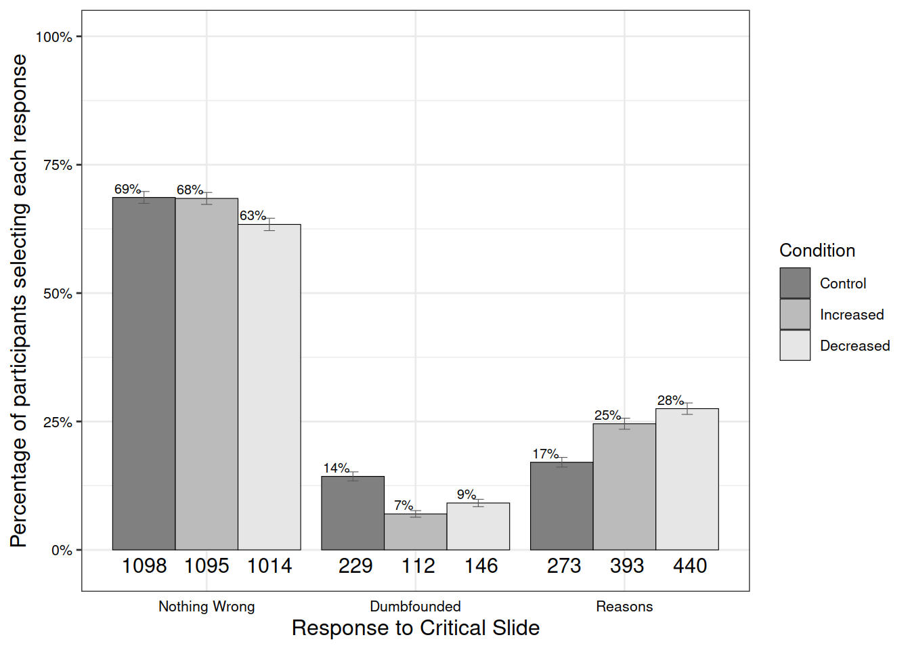
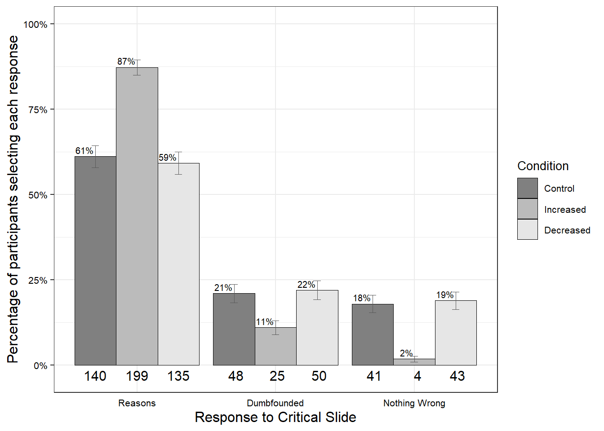
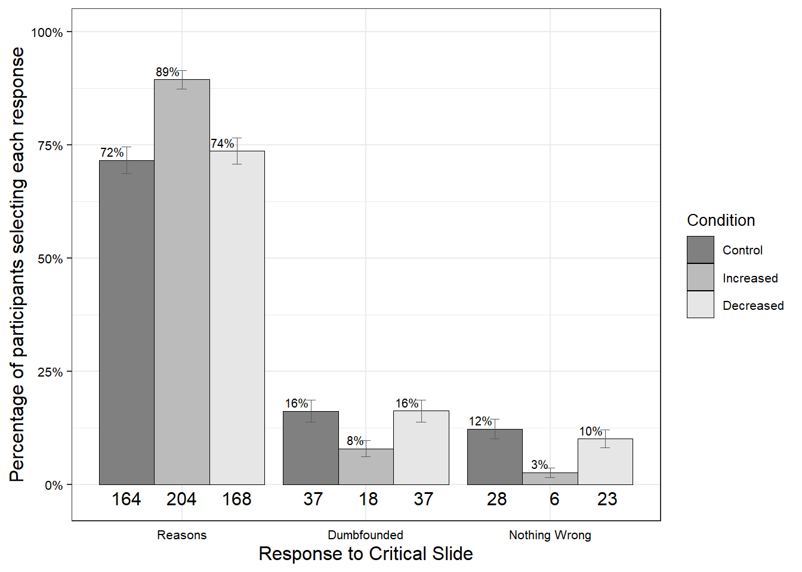
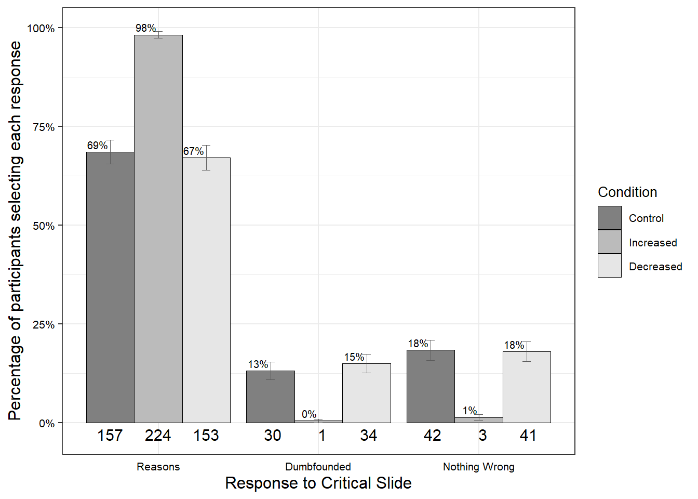
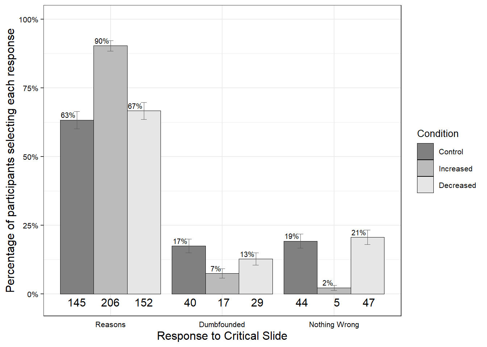

Sample and Simulated Data
Keywords
moral dumbfounding, dual-processes, reasons, intuitions
Analysis of Simulated Data
Temporal Distancing and Dumbfounding

Scenario-by-scenario Chi-Squared Tests
First we will conduct a series of chi-squared tests to test for an association between temporal distance and dumbfounded responding for each scenario individually. For each DV there is an overall chi-squared test followed by the expected counts, the observed counts, and the standardized residuals.
Julie and Mark
Code
x <- df
x <- x[which(x$scenario=="Julie and Mark"),]Critical Slide Only
Code
table(x$cs,x$condition)
c <- chisq.test(table(x$cs,x$condition))
c
c$expected
c$observed
c$stdres
control distant near
It's wrong and I can provide a valid reason 140 199 135
It's wrong but I cannot explain why 48 25 50
There is nothing wrong 41 4 43
Pearson's Chi-squared test
data: table(x$cs, x$condition)
X-squared = 58.387, df = 4, p-value = 6.329e-12
control distant near
It's wrong and I can provide a valid reason 158.46131 157.76934 157.76934
It's wrong but I cannot explain why 41.11971 40.94015 40.94015
There is nothing wrong 29.41898 29.29051 29.29051
control distant near
It's wrong and I can provide a valid reason 140 199 135
It's wrong but I cannot explain why 48 25 50
There is nothing wrong 41 4 43
control distant near
It's wrong and I can provide a valid reason -3.238679 7.241027 -3.998807
It's wrong but I cannot explain why 1.451850 -3.367301 1.913863
There is nothing wrong 2.803200 -6.128292 3.322027Including Coded Responses
Code
table(x$cs_with_coded1,x$condition)
c <- chisq.test(table(x$cs_with_coded1,x$condition))
c
c$expected
c$observed
c$stdres
control distant near
It's wrong and I can provide a valid reason 85 114 88
It's wrong but I cannot explain why 103 110 97
There is nothing wrong 41 4 43
Pearson's Chi-squared test
data: table(x$cs_with_coded1, x$condition)
X-squared = 39.051, df = 4, p-value = 6.798e-08
control distant near
It's wrong and I can provide a valid reason 95.94599 95.52701 95.52701
It's wrong but I cannot explain why 103.63504 103.18248 103.18248
There is nothing wrong 29.41898 29.29051 29.29051
control distant near
It's wrong and I can provide a valid reason 85 114 88
It's wrong but I cannot explain why 103 110 97
There is nothing wrong 41 4 43
control distant near
It's wrong and I can provide a valid reason -1.7968345 3.0357437 -1.2369444
It's wrong but I cannot explain why -0.1033327 1.1105552 -1.0071095
There is nothing wrong 2.8031999 -6.1282918 3.3220266Exploratory: Different Kinds of Dumbfounding
Code
table(x$cs_with_coded2,x$condition)
c <- chisq.test(table(x$cs_with_coded2,x$condition))
c
c$expected
c$observed
c$stdres
control distant near
It's wrong and I can provide a valid reason 85 114 88
It's wrong but I cannot explain why 48 25 50
no reason after coding 55 85 47
There is nothing wrong 41 4 43
Pearson's Chi-squared test
data: table(x$cs_with_coded2, x$condition)
X-squared = 60.546, df = 6, p-value = 3.486e-11
control distant near
It's wrong and I can provide a valid reason 95.94599 95.52701 95.52701
It's wrong but I cannot explain why 41.11971 40.94015 40.94015
no reason after coding 62.51533 62.24234 62.24234
There is nothing wrong 29.41898 29.29051 29.29051
control distant near
It's wrong and I can provide a valid reason 85 114 88
It's wrong but I cannot explain why 48 25 50
no reason after coding 55 85 47
There is nothing wrong 41 4 43
control distant near
It's wrong and I can provide a valid reason -1.796834 3.035744 -1.236944
It's wrong but I cannot explain why 1.451850 -3.367301 1.913863
no reason after coding -1.366307 4.141928 -2.774127
There is nothing wrong 2.803200 -6.128292 3.322027Plot

Jennifer
Code
x <- df
x <- x[which(x$scenario=="Jennifer"),]Critical Slide Only
Code
table(x$cs,x$condition)
c <- chisq.test(table(x$cs,x$condition))
c
c$expected
c$observed
c$stdres
control distant near
It's wrong and I can provide a valid reason 164 204 168
It's wrong but I cannot explain why 37 18 37
There is nothing wrong 28 6 23
Pearson's Chi-squared test
data: table(x$cs, x$condition)
X-squared = 27.288, df = 4, p-value = 1.738e-05
control distant near
It's wrong and I can provide a valid reason 179.18832 178.40584 178.40584
It's wrong but I cannot explain why 30.75620 30.62190 30.62190
There is nothing wrong 19.05547 18.97226 18.97226
control distant near
It's wrong and I can provide a valid reason 164 204 168
It's wrong but I cannot explain why 37 18 37
There is nothing wrong 28 6 23
control distant near
It's wrong and I can provide a valid reason -2.981741 5.030089 -2.045088
It's wrong but I cannot explain why 1.483075 -3.001330 1.516633
There is nothing wrong 2.622864 -3.808104 1.182372Including Coded Responses
Code
table(x$cs_with_coded1,x$condition)
c <- chisq.test(table(x$cs_with_coded1,x$condition))
c
c$expected
c$observed
c$stdres
control distant near
It's wrong and I can provide a valid reason 91 123 92
It's wrong but I cannot explain why 110 99 113
There is nothing wrong 28 6 23
Pearson's Chi-squared test
data: table(x$cs_with_coded1, x$condition)
X-squared = 21.507, df = 4, p-value = 0.0002512
control distant near
It's wrong and I can provide a valid reason 102.29781 101.85109 101.85109
It's wrong but I cannot explain why 107.64672 107.17664 107.17664
There is nothing wrong 19.05547 18.97226 18.97226
control distant near
It's wrong and I can provide a valid reason 91 123 92
It's wrong but I cannot explain why 110 99 113
There is nothing wrong 28 6 23
control distant near
It's wrong and I can provide a valid reason -1.8405586 3.4491962 -1.6066250
It's wrong but I cannot explain why 0.3818818 -1.3283242 0.9460249
There is nothing wrong 2.6228639 -3.8081042 1.1823722Exploratory: Different Kinds of Dumbfounding
Code
table(x$cs_with_coded2,x$condition)
c <- chisq.test(table(x$cs_with_coded2,x$condition))
c
c$expected
c$observed
c$stdres
control distant near
It's wrong and I can provide a valid reason 91 123 92
It's wrong but I cannot explain why 37 18 37
no reason after coding 73 81 76
There is nothing wrong 28 6 23
Pearson's Chi-squared test
data: table(x$cs_with_coded2, x$condition)
X-squared = 28.773, df = 6, p-value = 6.716e-05
control distant near
It's wrong and I can provide a valid reason 102.29781 101.85109 101.85109
It's wrong but I cannot explain why 30.75620 30.62190 30.62190
no reason after coding 76.89051 76.55474 76.55474
There is nothing wrong 19.05547 18.97226 18.97226
control distant near
It's wrong and I can provide a valid reason 91 123 92
It's wrong but I cannot explain why 37 18 37
no reason after coding 73 81 76
There is nothing wrong 28 6 23
control distant near
It's wrong and I can provide a valid reason -1.84055861 3.44919624 -1.60662499
It's wrong but I cannot explain why 1.48307500 -3.00132989 1.51663316
no reason after coding -0.66722563 0.76319839 -0.09524315
There is nothing wrong 2.62286389 -3.80810418 1.18237221Plot

Trolley
Code
x <- df
x <- x[which(x$scenario=="Trolley"),]Critical Slide Only
Code
table(x$cs,x$condition)
c <- chisq.test(table(x$cs,x$condition))
c
c$expected
c$observed
c$stdres
control distant near
It's wrong and I can provide a valid reason 157 224 153
It's wrong but I cannot explain why 30 1 34
There is nothing wrong 42 3 41
Pearson's Chi-squared test
data: table(x$cs, x$condition)
X-squared = 82.369, df = 4, p-value < 2.2e-16
control distant near
It's wrong and I can provide a valid reason 178.51971 177.74015 177.74015
It's wrong but I cannot explain why 21.72993 21.63504 21.63504
There is nothing wrong 28.75036 28.62482 28.62482
control distant near
It's wrong and I can provide a valid reason 157 224 153
It's wrong but I cannot explain why 30 1 34
There is nothing wrong 42 3 41
control distant near
It's wrong and I can provide a valid reason -4.204487 9.048060 -4.838976
It's wrong but I cannot explain why 2.285559 -5.709040 3.420981
There is nothing wrong 3.238747 -6.270591 3.028303Including Coded Responses
Code
table(x$cs_with_coded1,x$condition)
c <- chisq.test(table(x$cs_with_coded1,x$condition))
c
c$expected
c$observed
c$stdres
control distant near
It's wrong and I can provide a valid reason 93 139 97
It's wrong but I cannot explain why 94 86 90
There is nothing wrong 42 3 41
Pearson's Chi-squared test
data: table(x$cs_with_coded1, x$condition)
X-squared = 46.712, df = 4, p-value = 1.751e-09
control distant near
It's wrong and I can provide a valid reason 109.98686 109.50657 109.50657
It's wrong but I cannot explain why 90.26277 89.86861 89.86861
There is nothing wrong 28.75036 28.62482 28.62482
control distant near
It's wrong and I can provide a valid reason 93 139 97
It's wrong but I cannot explain why 94 86 90
There is nothing wrong 42 3 41
control distant near
It's wrong and I can provide a valid reason -2.75375874 4.78644065 -2.02967069
It's wrong but I cannot explain why 0.61941135 -0.64188866 0.02179999
There is nothing wrong 3.23874663 -6.27059105 3.02830287Exploratory: Different Kinds of Dumbfounding
Code
table(x$cs_with_coded2,x$condition)
c <- chisq.test(table(x$cs_with_coded2,x$condition))
c
c$expected
c$observed
c$stdres
control distant near
It's wrong and I can provide a valid reason 93 139 97
It's wrong but I cannot explain why 30 1 34
no reason after coding 64 85 56
There is nothing wrong 42 3 41
Pearson's Chi-squared test
data: table(x$cs_with_coded2, x$condition)
X-squared = 82.899, df = 6, p-value = 8.986e-16
control distant near
It's wrong and I can provide a valid reason 109.98686 109.50657 109.50657
It's wrong but I cannot explain why 21.72993 21.63504 21.63504
no reason after coding 68.53285 68.23358 68.23358
There is nothing wrong 28.75036 28.62482 28.62482
control distant near
It's wrong and I can provide a valid reason 93 139 97
It's wrong but I cannot explain why 30 1 34
no reason after coding 64 85 56
There is nothing wrong 42 3 41
control distant near
It's wrong and I can provide a valid reason -2.753759 4.786441 -2.029671
It's wrong but I cannot explain why 2.285559 -5.709040 3.420981
no reason after coding -0.801695 2.968610 -2.166039
There is nothing wrong 3.238747 -6.270591 3.028303Plot

Heinz
Code
x <- df
x <- x[which(x$scenario=="Heinz"),]Critical Slide Only
Code
table(x$cs,x$condition)
c <- chisq.test(table(x$cs,x$condition))
c
c$expected
c$observed
c$stdres
control distant near
It's wrong and I can provide a valid reason 145 206 152
It's wrong but I cannot explain why 40 17 29
There is nothing wrong 44 5 47
Pearson's Chi-squared test
data: table(x$cs, x$condition)
X-squared = 56.865, df = 4, p-value = 1.321e-11
control distant near
It's wrong and I can provide a valid reason 168.15620 167.42190 167.42190
It's wrong but I cannot explain why 28.75036 28.62482 28.62482
There is nothing wrong 32.09343 31.95328 31.95328
control distant near
It's wrong and I can provide a valid reason 145 206 152
It's wrong but I cannot explain why 40 17 29
There is nothing wrong 44 5 47
control distant near
It's wrong and I can provide a valid reason -4.24603317 7.08160186 -2.83092568
It's wrong but I cannot explain why 2.74986575 -2.84468276 0.09181006
There is nothing wrong 2.77797976 -6.29547883 3.51446137Including Coded Responses
Code
table(x$cs_with_coded1,x$condition)
c <- chisq.test(table(x$cs_with_coded1,x$condition))
c
c$expected
c$observed
c$stdres
control distant near
It's wrong and I can provide a valid reason 86 116 84
It's wrong but I cannot explain why 99 107 97
There is nothing wrong 44 5 47
Pearson's Chi-squared test
data: table(x$cs_with_coded1, x$condition)
X-squared = 41.642, df = 4, p-value = 1.979e-08
control distant near
It's wrong and I can provide a valid reason 95.61168 95.19416 95.19416
It's wrong but I cannot explain why 101.29489 100.85255 100.85255
There is nothing wrong 32.09343 31.95328 31.95328
control distant near
It's wrong and I can provide a valid reason 86 116 84
It's wrong but I cannot explain why 99 107 97
There is nothing wrong 44 5 47
control distant near
It's wrong and I can provide a valid reason -1.5785759 3.4207876 -1.8404855
It's wrong but I cannot explain why -0.3742352 1.0035800 -0.6289356
There is nothing wrong 2.7779798 -6.2954788 3.5144614Exploratory: Different Kinds of Dumbfounding
Code
table(x$cs_with_coded2,x$condition)
c <- chisq.test(table(x$cs_with_coded2,x$condition))
c
c$expected
c$observed
c$stdres
control distant near
It's wrong and I can provide a valid reason 86 116 84
It's wrong but I cannot explain why 40 17 29
no reason after coding 59 90 68
There is nothing wrong 44 5 47
Pearson's Chi-squared test
data: table(x$cs_with_coded2, x$condition)
X-squared = 57.345, df = 6, p-value = 1.555e-10
control distant near
It's wrong and I can provide a valid reason 95.61168 95.19416 95.19416
It's wrong but I cannot explain why 28.75036 28.62482 28.62482
no reason after coding 72.54453 72.22774 72.22774
There is nothing wrong 32.09343 31.95328 31.95328
control distant near
It's wrong and I can provide a valid reason 86 116 84
It's wrong but I cannot explain why 40 17 29
no reason after coding 59 90 68
There is nothing wrong 44 5 47
control distant near
It's wrong and I can provide a valid reason -1.57857595 3.42078762 -1.84048551
It's wrong but I cannot explain why 2.74986575 -2.84468276 0.09181006
no reason after coding -2.35801573 3.09742120 -0.73682699
There is nothing wrong 2.77797976 -6.29547883 3.51446137Plot

Overall Effect of Temporal Distance
Just Critical Slide
Code
x <- df
table(x$temp,x$scenario)
x$JulieandMark <- car::recode(x$scenario, "'Julie and Mark'=1;'Jennifer'=0; 'Trolley'=0; 'Heinz'=0")
x$Jennifer <- car::recode(x$scenario, "'Julie and Mark'=0;'Jennifer'=1; 'Trolley'=0; 'Heinz'=0")
x$Trolley <- car::recode(x$scenario, "'Julie and Mark'=0;'Jennifer'=0; 'Trolley'=1; 'Heinz'=0")
x$Heinz <- car::recode(x$scenario, "'Julie and Mark'=0;'Jennifer'=0; 'Trolley'=0; 'Heinz'=1")
m1a <- mblogit(formula=cs~temp#*scenario
, random = list(~1|ResponseId)
# , contrasts = list(scenario = contr.sum)
, data = x, method=c("PQL"), estimator=c("ML"))
m1b <- mblogit(formula=cs~temp*scenario
, random = list(~1|ResponseId)
# , contrasts = list(scenario = contr.sum)
, data = x, method=c("PQL"), estimator=c("ML"))
m1c_heinz_base <- mblogit(formula=cs~temp*(JulieandMark+Jennifer+Trolley)
, random = list(~1|ResponseId)
# , contrasts = list(scenario = contr.sum)
, data = x, method=c("PQL"), estimator=c("ML"))
m1c_trolley_base <- mblogit(formula=cs~temp*(JulieandMark+Jennifer+Heinz)
, random = list(~1|ResponseId)
# , contrasts = list(scenario = contr.sum)
, data = x, method=c("PQL"), estimator=c("ML"))
m1c_jennifer_base <- mblogit(formula=cs~temp*(JulieandMark+Trolley+Heinz)
, random = list(~1|ResponseId)
# , contrasts = list(scenario = contr.sum)
, data = x, method=c("PQL"), estimator=c("ML"))
m1c_JulieMark_base <- mblogit(formula=cs~temp*(Jennifer+Trolley+Heinz)
, random = list(~1|ResponseId)
# , contrasts = list(scenario = contr.sum)
, data = x, method=c("PQL"), estimator=c("ML"))
m1d <- mblogit(formula=cs~temp*scenario
+ ju1_2 + ju2_2 + cf1_2 + cf2_2
+ confused + irritated + reason + gut
, random = list(~1|ResponseId)
# , contrasts = list(scenario = contr.sum)
, data = x, method=c("PQL"), estimator=c("ML"))
stats::AIC(m1a)
stats::AIC(m1b)
stats::BIC(m1a)
stats::BIC(m1b)
stats::BIC(m1c_heinz_base)
stats::BIC(m1c_trolley_base)
stats::BIC(m1c_jennifer_base)
stats::BIC(m1c_JulieMark_base)
stats::BIC(m1d)
stats::AIC(m1c_heinz_base)
stats::AIC(m1c_trolley_base)
stats::AIC(m1c_jennifer_base)
stats::AIC(m1c_JulieMark_base)
stats::AIC(m1d)
# lower AIC is better
# lower BIC is better
summary(m1a)
summary(m1b)
summary(m1c_heinz_base)
summary(m1c_trolley_base)
summary(m1c_jennifer_base)
summary(m1c_JulieMark_base)
summary(m1d)
summary(m1d)
m1_results <- function(x){
m1 <- x
coefs <- summary(m1)$coefficients
LLs <- coefs[,1] + qnorm(.025)*coefs[,2]
ULs <- coefs[,1] + qnorm(.975)*coefs[,2]
OR <- exp(coefs[,1])
ORLL <- exp(LLs)
ORUL <- exp(ULs)
HHES <- coefs[,1]/1.81 # Hasselblad and Hedges Effect Size
round(cbind(coefs, LLs, ULs), 4)
round(cbind(OR, ORLL, ORUL, HHES), 4)
round(cbind(coefs, LLs, ULs, OR, ORLL, ORUL, HHES), 4)
}Most Basic Model (not including Scenario)
Code
m1 <- mblogit(
formula =
cs ~ temp
, random = list(~1|ResponseId)
, data = x
, method=c("PQL")
, estimator=c("ML"))
summary(m1)
m1_results(m1)
Iteration 1 - deviance = 3861.337 - criterion = 0.8626819
Iteration 2 - deviance = 3811.354 - criterion = 0.02945203
Iteration 3 - deviance = 3806.977 - criterion = 0.005059348
Iteration 4 - deviance = 3806.832 - criterion = 0.000253039
Iteration 5 - deviance = 3806.832 - criterion = 4.76791e-07
Iteration 6 - deviance = 3806.832 - criterion = 1.533713e-12
converged
Call:
mblogit(formula = cs ~ temp, data = x, random = list(~1 | ResponseId),
method = c("PQL"), estimator = c("ML"))
Equation for It's wrong but I cannot explain why vs It's wrong and I can provide a valid reason:
Estimate Std. Error z value Pr(>|z|)
(Intercept) -1.36345 0.09001 -15.148 < 2e-16 ***
tempdistant -1.25070 0.16030 -7.802 6.08e-15 ***
tempnear -0.03608 0.12811 -0.282 0.778
Equation for There is nothing wrong vs It's wrong and I can provide a valid reason:
Estimate Std. Error z value Pr(>|z|)
(Intercept) -1.363455 0.090010 -15.148 <2e-16 ***
tempdistant -2.471207 0.254671 -9.704 <2e-16 ***
tempnear -0.009767 0.127436 -0.077 0.939
---
Signif. codes: 0 '***' 0.001 '**' 0.01 '*' 0.05 '.' 0.1 ' ' 1
(Co-)Variances:
Grouping level: ResponseId
Estimate Std.Err.
It's wrong but I cannot explain why~1 1.088e-07 4.922e-23
There is nothing wrong~1 2.150e-11 1.088e-07 3.481e-23 4.923e-23
Approximate residual deviance: 3807
Number of Fisher scoring iterations: 6
Number of observations
Groups by ResponseId: 685
Individual observations: 2740
Estimate Std. Error z value Pr(>|z|) LLs ULs OR ORLL ORUL HHES
It's wrong but I cannot explain why~(Intercept) -1.3635 0.0900 -15.1478 0.0000 -1.5399 -1.1870 0.2558 0.2144 0.3051 -0.7533
There is nothing wrong~(Intercept) -1.3635 0.0900 -15.1478 0.0000 -1.5399 -1.1870 0.2558 0.2144 0.3051 -0.7533
It's wrong but I cannot explain why~tempdistant -1.2507 0.1603 -7.8023 0.0000 -1.5649 -0.9365 0.2863 0.2091 0.3920 -0.6910
There is nothing wrong~tempdistant -2.4712 0.2547 -9.7035 0.0000 -2.9704 -1.9721 0.0845 0.0513 0.1392 -1.3653
It's wrong but I cannot explain why~tempnear -0.0361 0.1281 -0.2817 0.7782 -0.2872 0.2150 0.9646 0.7504 1.2399 -0.0199
There is nothing wrong~tempnear -0.0098 0.1274 -0.0766 0.9389 -0.2595 0.2400 0.9903 0.7714 1.2713 -0.0054Scenario included
Code
m1 <- mblogit(
formula =
cs ~ temp
* scenario
, random = list(~1|ResponseId)
, data = x
, method=c("PQL")
, estimator=c("ML"))
summary(m1)
m1_results(m1)
Iteration 1 - deviance = 3817.079 - criterion = 0.8605213
Iteration 2 - deviance = 3754.344 - criterion = 0.03603118
Iteration 3 - deviance = 3745.546 - criterion = 0.01066728
Iteration 4 - deviance = 3744.542 - criterion = 0.002689835
Iteration 5 - deviance = 3744.475 - criterion = 0.000356037
Iteration 6 - deviance = 3744.474 - criterion = 5.62442e-06
Iteration 7 - deviance = 3744.474 - criterion = 1.112783e-09
converged
Call:
mblogit(formula = cs ~ temp * scenario, data = x, random = list(~1 |
ResponseId), method = c("PQL"), estimator = c("ML"))
Equation for It's wrong but I cannot explain why vs It's wrong and I can provide a valid reason:
Estimate Std. Error z value Pr(>|z|)
(Intercept) -1.2879 0.1786 -7.211 5.55e-13 ***
tempdistant -1.2068 0.3092 -3.904 9.48e-05 ***
tempnear -0.3687 0.2701 -1.365 0.1722
scenarioJennifer -0.2011 0.2550 -0.789 0.4303
scenarioJulie and Mark 0.2174 0.2447 0.889 0.3743
scenarioTrolley -0.3672 0.2676 -1.372 0.1700
tempdistant:scenarioJennifer 0.2680 0.4349 0.616 0.5377
tempnear:scenarioJennifer 0.3446 0.3729 0.924 0.3554
tempdistant:scenarioJulie and Mark 0.2028 0.4106 0.494 0.6213
tempnear:scenarioJulie and Mark 0.4459 0.3582 1.245 0.2132
tempdistant:scenarioTrolley -2.5498 1.0674 -2.389 0.0169 *
tempnear:scenarioTrolley 0.5197 0.3855 1.348 0.1776
Equation for There is nothing wrong vs It's wrong and I can provide a valid reason:
Estimate Std. Error z value Pr(>|z|)
(Intercept) -1.19254 0.17212 -6.929 4.25e-12 ***
tempdistant -2.52589 0.48423 -5.216 1.83e-07 ***
tempnear 0.01881 0.23975 0.078 0.9375
scenarioJennifer -0.57512 0.26727 -2.152 0.0314 *
scenarioJulie and Mark -0.03553 0.24730 -0.144 0.8858
scenarioTrolley -0.12603 0.24455 -0.515 0.6063
tempdistant:scenarioJennifer 0.76720 0.66922 1.146 0.2516
tempnear:scenarioJennifer -0.23962 0.38564 -0.621 0.5344
tempdistant:scenarioJulie and Mark -0.15305 0.72183 -0.212 0.8321
tempnear:scenarioJulie and Mark 0.06518 0.34594 0.188 0.8505
tempdistant:scenarioTrolley -0.46856 0.77618 -0.604 0.5461
tempnear:scenarioTrolley -0.01710 0.34436 -0.050 0.9604
---
Signif. codes: 0 '***' 0.001 '**' 0.01 '*' 0.05 '.' 0.1 ' ' 1
(Co-)Variances:
Grouping level: ResponseId
Estimate Std.Err.
It's wrong but I cannot explain why~1 2.511e-09 6.051e-28
There is nothing wrong~1 6.526e-14 2.511e-09 4.279e-28 6.052e-28
Approximate residual deviance: 3744
Number of Fisher scoring iterations: 7
Number of observations
Groups by ResponseId: 685
Individual observations: 2740
Estimate Std. Error z value Pr(>|z|) LLs ULs OR ORLL ORUL HHES
It's wrong but I cannot explain why~(Intercept) -1.2879 0.1786 -7.2110 0.0000 -1.6379 -0.9378 0.2759 0.1944 0.3915 -0.7115
There is nothing wrong~(Intercept) -1.1925 0.1721 -6.9287 0.0000 -1.5299 -0.8552 0.3034 0.2166 0.4252 -0.6589
It's wrong but I cannot explain why~tempdistant -1.2068 0.3092 -3.9036 0.0001 -1.8127 -0.6009 0.2992 0.1632 0.5483 -0.6667
There is nothing wrong~tempdistant -2.5259 0.4842 -5.2163 0.0000 -3.4750 -1.5768 0.0800 0.0310 0.2066 -1.3955
It's wrong but I cannot explain why~tempnear -0.3687 0.2701 -1.3651 0.1722 -0.8981 0.1607 0.6916 0.4073 1.1743 -0.2037
There is nothing wrong~tempnear 0.0188 0.2397 0.0785 0.9375 -0.4511 0.4887 1.0190 0.6369 1.6302 0.0104
It's wrong but I cannot explain why~scenarioJennifer -0.2011 0.2550 -0.7886 0.4303 -0.7009 0.2987 0.8178 0.4962 1.3481 -0.1111
There is nothing wrong~scenarioJennifer -0.5751 0.2673 -2.1518 0.0314 -1.0990 -0.0513 0.5626 0.3332 0.9500 -0.3177
It's wrong but I cannot explain why~scenarioJulie and Mark 0.2174 0.2447 0.8885 0.3743 -0.2622 0.6970 1.2429 0.7694 2.0077 0.1201
There is nothing wrong~scenarioJulie and Mark -0.0355 0.2473 -0.1437 0.8858 -0.5202 0.4492 0.9651 0.5944 1.5670 -0.0196
It's wrong but I cannot explain why~scenarioTrolley -0.3672 0.2676 -1.3723 0.1700 -0.8916 0.1573 0.6927 0.4100 1.1703 -0.2029
There is nothing wrong~scenarioTrolley -0.1260 0.2445 -0.5154 0.6063 -0.6053 0.3533 0.8816 0.5459 1.4237 -0.0696
It's wrong but I cannot explain why~tempdistant:scenarioJennifer 0.2680 0.4349 0.6162 0.5377 -0.5844 1.1204 1.3074 0.5574 3.0662 0.1481
There is nothing wrong~tempdistant:scenarioJennifer 0.7672 0.6692 1.1464 0.2516 -0.5445 2.0788 2.1537 0.5802 7.9952 0.4239
It's wrong but I cannot explain why~tempnear:scenarioJennifer 0.3446 0.3729 0.9242 0.3554 -0.3863 1.0755 1.4115 0.6796 2.9315 0.1904
There is nothing wrong~tempnear:scenarioJennifer -0.2396 0.3856 -0.6213 0.5344 -0.9955 0.5162 0.7869 0.3696 1.6757 -0.1324
It's wrong but I cannot explain why~tempdistant:scenarioJulie and Mark 0.2028 0.4106 0.4940 0.6213 -0.6019 1.0075 1.2249 0.5478 2.7389 0.1121
There is nothing wrong~tempdistant:scenarioJulie and Mark -0.1530 0.7218 -0.2120 0.8321 -1.5678 1.2617 0.8581 0.2085 3.5315 -0.0846
It's wrong but I cannot explain why~tempnear:scenarioJulie and Mark 0.4459 0.3582 1.2447 0.2132 -0.2562 1.1481 1.5619 0.7740 3.1521 0.2464
There is nothing wrong~tempnear:scenarioJulie and Mark 0.0652 0.3459 0.1884 0.8505 -0.6128 0.7432 1.0674 0.5418 2.1027 0.0360
It's wrong but I cannot explain why~tempdistant:scenarioTrolley -2.5498 1.0674 -2.3888 0.0169 -4.6419 -0.4577 0.0781 0.0096 0.6327 -1.4087
There is nothing wrong~tempdistant:scenarioTrolley -0.4686 0.7762 -0.6037 0.5461 -1.9898 1.0527 0.6259 0.1367 2.8654 -0.2589
It's wrong but I cannot explain why~tempnear:scenarioTrolley 0.5197 0.3855 1.3481 0.1776 -0.2359 1.2753 1.6815 0.7899 3.5796 0.2871
There is nothing wrong~tempnear:scenarioTrolley -0.0171 0.3444 -0.0497 0.9604 -0.6920 0.6578 0.9830 0.5006 1.9306 -0.0094Covariates added
Code
m1 <- mblogit(
formula =
cs ~ temp
* scenario
+ ju1_2 + ju2_2 + cf1_2 + cf2_2
+ confused + irritated + reason + gut
, random = list(~1|ResponseId)
, data = x
, method=c("PQL")
, estimator=c("ML"))
summary(m1)
m1_results(m1)
Iteration 1 - deviance = 3799.465 - criterion = 0.8596893
Iteration 2 - deviance = 3734.106 - criterion = 0.03678982
Iteration 3 - deviance = 3725.106 - criterion = 0.01067024
Iteration 4 - deviance = 3724.083 - criterion = 0.002676522
Iteration 5 - deviance = 3724.014 - criterion = 0.0003552326
Iteration 6 - deviance = 3724.014 - criterion = 5.697716e-06
Iteration 7 - deviance = 3724.014 - criterion = 1.161689e-09
converged
Call:
mblogit(formula = cs ~ temp * scenario + ju1_2 + ju2_2 + cf1_2 +
cf2_2 + confused + irritated + reason + gut, data = x, random = list(~1 |
ResponseId), method = c("PQL"), estimator = c("ML"))
Equation for It's wrong but I cannot explain why vs It's wrong and I can provide a valid reason:
Estimate Std. Error z value Pr(>|z|)
(Intercept) -0.819089 0.549382 -1.491 0.1360
tempdistant -1.212067 0.309786 -3.913 9.13e-05 ***
tempnear -0.365406 0.270750 -1.350 0.1771
scenarioJennifer -0.196143 0.255985 -0.766 0.4435
scenarioJulie and Mark 0.216045 0.245431 0.880 0.3787
scenarioTrolley -0.354907 0.268395 -1.322 0.1861
ju1_2 -0.054664 0.043548 -1.255 0.2094
ju2_2 -0.084804 0.042579 -1.992 0.0464 *
cf1_2 0.028999 0.054421 0.533 0.5941
cf2_2 -0.016774 0.053111 -0.316 0.7521
confused 0.005378 0.043371 0.124 0.9013
irritated -0.046599 0.044525 -1.047 0.2953
reason 0.036555 0.043049 0.849 0.3958
gut -0.019107 0.043822 -0.436 0.6628
tempdistant:scenarioJennifer 0.254800 0.435932 0.584 0.5589
tempnear:scenarioJennifer 0.346444 0.374049 0.926 0.3543
tempdistant:scenarioJulie and Mark 0.203905 0.411821 0.495 0.6205
tempnear:scenarioJulie and Mark 0.431261 0.359170 1.201 0.2299
tempdistant:scenarioTrolley -2.546937 1.067745 -2.385 0.0171 *
tempnear:scenarioTrolley 0.496131 0.386637 1.283 0.1994
Equation for There is nothing wrong vs It's wrong and I can provide a valid reason:
Estimate Std. Error z value Pr(>|z|)
(Intercept) -1.93200 0.58464 -3.305 0.000951 ***
tempdistant -2.54799 0.48484 -5.255 1.48e-07 ***
tempnear 0.03662 0.24091 0.152 0.879171
scenarioJennifer -0.56411 0.26858 -2.100 0.035701 *
scenarioJulie and Mark -0.02814 0.24843 -0.113 0.909798
scenarioTrolley -0.09764 0.24585 -0.397 0.691250
ju1_2 -0.06671 0.04638 -1.438 0.150328
ju2_2 -0.05153 0.04505 -1.144 0.252683
cf1_2 0.02229 0.05756 0.387 0.698622
cf2_2 0.16618 0.05908 2.813 0.004914 **
confused 0.03100 0.04591 0.675 0.499563
irritated 0.03080 0.04661 0.661 0.508744
reason -0.01009 0.04627 -0.218 0.827334
gut -0.01543 0.04657 -0.331 0.740422
tempdistant:scenarioJennifer 0.78543 0.67017 1.172 0.241202
tempnear:scenarioJennifer -0.26727 0.38735 -0.690 0.490204
tempdistant:scenarioJulie and Mark -0.13628 0.72284 -0.189 0.850453
tempnear:scenarioJulie and Mark 0.04687 0.34748 0.135 0.892704
tempdistant:scenarioTrolley -0.48337 0.77693 -0.622 0.533841
tempnear:scenarioTrolley -0.06190 0.34634 -0.179 0.858162
---
Signif. codes: 0 '***' 0.001 '**' 0.01 '*' 0.05 '.' 0.1 ' ' 1
(Co-)Variances:
Grouping level: ResponseId
Estimate Std.Err.
It's wrong but I cannot explain why~1 3.627e-06 1.823e-18
There is nothing wrong~1 -4.544e-09 3.626e-06 1.288e-18 1.821e-18
Approximate residual deviance: 3724
Number of Fisher scoring iterations: 7
Number of observations
Groups by ResponseId: 685
Individual observations: 2740
Estimate Std. Error z value Pr(>|z|) LLs ULs OR ORLL ORUL HHES
It's wrong but I cannot explain why~(Intercept) -0.8191 0.5494 -1.4909 0.1360 -1.8959 0.2577 0.4408 0.1502 1.2939 -0.4525
There is nothing wrong~(Intercept) -1.9320 0.5846 -3.3046 0.0010 -3.0779 -0.7861 0.1449 0.0461 0.4556 -1.0674
It's wrong but I cannot explain why~tempdistant -1.2121 0.3098 -3.9126 0.0001 -1.8192 -0.6049 0.2976 0.1621 0.5461 -0.6697
There is nothing wrong~tempdistant -2.5480 0.4848 -5.2553 0.0000 -3.4983 -1.5977 0.0782 0.0302 0.2024 -1.4077
It's wrong but I cannot explain why~tempnear -0.3654 0.2708 -1.3496 0.1771 -0.8961 0.1653 0.6939 0.4082 1.1797 -0.2019
There is nothing wrong~tempnear 0.0366 0.2409 0.1520 0.8792 -0.4356 0.5088 1.0373 0.6469 1.6633 0.0202
It's wrong but I cannot explain why~scenarioJennifer -0.1961 0.2560 -0.7662 0.4435 -0.6979 0.3056 0.8219 0.4976 1.3574 -0.1084
There is nothing wrong~scenarioJennifer -0.5641 0.2686 -2.1003 0.0357 -1.0905 -0.0377 0.5689 0.3360 0.9630 -0.3117
It's wrong but I cannot explain why~scenarioJulie and Mark 0.2160 0.2454 0.8803 0.3787 -0.2650 0.6971 1.2412 0.7672 2.0079 0.1194
There is nothing wrong~scenarioJulie and Mark -0.0281 0.2484 -0.1133 0.9098 -0.5150 0.4588 0.9722 0.5975 1.5821 -0.0155
It's wrong but I cannot explain why~scenarioTrolley -0.3549 0.2684 -1.3223 0.1861 -0.8810 0.1711 0.7012 0.4144 1.1867 -0.1961
There is nothing wrong~scenarioTrolley -0.0976 0.2458 -0.3972 0.6913 -0.5795 0.3842 0.9070 0.5602 1.4685 -0.0539
It's wrong but I cannot explain why~ju1_2 -0.0547 0.0435 -1.2553 0.2094 -0.1400 0.0307 0.9468 0.8693 1.0312 -0.0302
There is nothing wrong~ju1_2 -0.0667 0.0464 -1.4384 0.1503 -0.1576 0.0242 0.9355 0.8542 1.0245 -0.0369
It's wrong but I cannot explain why~ju2_2 -0.0848 0.0426 -1.9917 0.0464 -0.1683 -0.0014 0.9187 0.8451 0.9986 -0.0469
There is nothing wrong~ju2_2 -0.0515 0.0451 -1.1439 0.2527 -0.1398 0.0368 0.9498 0.8695 1.0375 -0.0285
It's wrong but I cannot explain why~cf1_2 0.0290 0.0544 0.5329 0.5941 -0.0777 0.1357 1.0294 0.9253 1.1453 0.0160
There is nothing wrong~cf1_2 0.0223 0.0576 0.3872 0.6986 -0.0905 0.1351 1.0225 0.9134 1.1447 0.0123
It's wrong but I cannot explain why~cf2_2 -0.0168 0.0531 -0.3158 0.7521 -0.1209 0.0873 0.9834 0.8861 1.0912 -0.0093
There is nothing wrong~cf2_2 0.1662 0.0591 2.8126 0.0049 0.0504 0.2820 1.1808 1.0517 1.3257 0.0918
It's wrong but I cannot explain why~confused 0.0054 0.0434 0.1240 0.9013 -0.0796 0.0904 1.0054 0.9235 1.0946 0.0030
There is nothing wrong~confused 0.0310 0.0459 0.6752 0.4996 -0.0590 0.1210 1.0315 0.9427 1.1286 0.0171
It's wrong but I cannot explain why~irritated -0.0466 0.0445 -1.0466 0.2953 -0.1339 0.0407 0.9545 0.8747 1.0415 -0.0257
There is nothing wrong~irritated 0.0308 0.0466 0.6608 0.5087 -0.0606 0.1222 1.0313 0.9412 1.1299 0.0170
It's wrong but I cannot explain why~reason 0.0366 0.0430 0.8492 0.3958 -0.0478 0.1209 1.0372 0.9533 1.1285 0.0202
There is nothing wrong~reason -0.0101 0.0463 -0.2181 0.8273 -0.1008 0.0806 0.9900 0.9041 1.0839 -0.0056
It's wrong but I cannot explain why~gut -0.0191 0.0438 -0.4360 0.6628 -0.1050 0.0668 0.9811 0.9003 1.0691 -0.0106
There is nothing wrong~gut -0.0154 0.0466 -0.3313 0.7404 -0.1067 0.0758 0.9847 0.8988 1.0788 -0.0085
It's wrong but I cannot explain why~tempdistant:scenarioJennifer 0.2548 0.4359 0.5845 0.5589 -0.5996 1.1092 1.2902 0.5490 3.0320 0.1408
There is nothing wrong~tempdistant:scenarioJennifer 0.7854 0.6702 1.1720 0.2412 -0.5281 2.0989 2.1934 0.5897 8.1576 0.4339
It's wrong but I cannot explain why~tempnear:scenarioJennifer 0.3464 0.3740 0.9262 0.3543 -0.3867 1.0796 1.4140 0.6793 2.9434 0.1914
There is nothing wrong~tempnear:scenarioJennifer -0.2673 0.3874 -0.6900 0.4902 -1.0265 0.4919 0.7655 0.3583 1.6355 -0.1477
It's wrong but I cannot explain why~tempdistant:scenarioJulie and Mark 0.2039 0.4118 0.4951 0.6205 -0.6032 1.0111 1.2262 0.5470 2.7485 0.1127
There is nothing wrong~tempdistant:scenarioJulie and Mark -0.1363 0.7228 -0.1885 0.8505 -1.5530 1.2805 0.8726 0.2116 3.5983 -0.0753
It's wrong but I cannot explain why~tempnear:scenarioJulie and Mark 0.4313 0.3592 1.2007 0.2299 -0.2727 1.1352 1.5392 0.7613 3.1119 0.2383
There is nothing wrong~tempnear:scenarioJulie and Mark 0.0469 0.3475 0.1349 0.8927 -0.6342 0.7279 1.0480 0.5304 2.0708 0.0259
It's wrong but I cannot explain why~tempdistant:scenarioTrolley -2.5469 1.0677 -2.3853 0.0171 -4.6397 -0.4542 0.0783 0.0097 0.6350 -1.4071
There is nothing wrong~tempdistant:scenarioTrolley -0.4834 0.7769 -0.6222 0.5338 -2.0061 1.0394 0.6167 0.1345 2.8275 -0.2671
It's wrong but I cannot explain why~tempnear:scenarioTrolley 0.4961 0.3866 1.2832 0.1994 -0.2617 1.2539 1.6424 0.7698 3.5041 0.2741
There is nothing wrong~tempnear:scenarioTrolley -0.0619 0.3463 -0.1787 0.8582 -0.7407 0.6169 0.9400 0.4768 1.8532 -0.0342Including Coded Responses
Code
x <- df
table(x$temp,x$scenario)
x$JulieandMark <- car::recode(x$scenario, "'Julie and Mark'=1;'Jennifer'=0; 'Trolley'=0; 'Heinz'=0")
x$Jennifer <- car::recode(x$scenario, "'Julie and Mark'=0;'Jennifer'=1; 'Trolley'=0; 'Heinz'=0")
x$Trolley <- car::recode(x$scenario, "'Julie and Mark'=0;'Jennifer'=0; 'Trolley'=1; 'Heinz'=0")
x$Heinz <- car::recode(x$scenario, "'Julie and Mark'=0;'Jennifer'=0; 'Trolley'=0; 'Heinz'=1")
x$cs_with_coded1 <- as.factor(x$cs_with_coded1)
x$cs_with_coded2 <- as.factor(x$cs_with_coded2)
m1a <- mblogit(formula=cs_with_coded1~temp#*scenario
, random = list(~1|ResponseId)
# , contrasts = list(scenario = contr.sum)
, data = x, method=c("PQL"), estimator=c("ML"))
m1b <- mblogit(formula=cs_with_coded1~temp*scenario
, random = list(~1|ResponseId)
# , contrasts = list(scenario = contr.sum)
, data = x, method=c("PQL"), estimator=c("ML"))
m1c_heinz_base <- mblogit(formula=cs_with_coded1~temp*(JulieandMark+Jennifer+Trolley)
, random = list(~1|ResponseId)
# , contrasts = list(scenario = contr.sum)
, data = x, method=c("PQL"), estimator=c("ML"))
m1c_trolley_base <- mblogit(formula=cs_with_coded1~temp*(JulieandMark+Jennifer+Heinz)
, random = list(~1|ResponseId)
# , contrasts = list(scenario = contr.sum)
, data = x, method=c("PQL"), estimator=c("ML"))
m1c_jennifer_base <- mblogit(formula=cs_with_coded1~temp*(JulieandMark+Trolley+Heinz)
, random = list(~1|ResponseId)
# , contrasts = list(scenario = contr.sum)
, data = x, method=c("PQL"), estimator=c("ML"))
m1c_JulieMark_base <- mblogit(formula=cs_with_coded1~temp*(Jennifer+Trolley+Heinz)
, random = list(~1|ResponseId)
# , contrasts = list(scenario = contr.sum)
, data = x, method=c("PQL"), estimator=c("ML"))
m1d <- mblogit(formula=cs_with_coded1~temp*scenario
+ ju1_2 + ju2_2 + cf1_2 + cf2_2
+ confused + irritated + reason + gut
, random = list(~1|ResponseId)
# , contrasts = list(scenario = contr.sum)
, data = x, method=c("PQL"), estimator=c("ML"))
stats::AIC(m1a)
stats::AIC(m1b)
stats::BIC(m1a)
stats::BIC(m1b)
stats::BIC(m1c_heinz_base)
stats::BIC(m1c_trolley_base)
stats::BIC(m1c_jennifer_base)
stats::BIC(m1c_JulieMark_base)
stats::BIC(m1d)
stats::AIC(m1c_heinz_base)
stats::AIC(m1c_trolley_base)
stats::AIC(m1c_jennifer_base)
stats::AIC(m1c_JulieMark_base)
stats::AIC(m1d)
# lower AIC is better
# lower BIC is better
summary(m1a)
summary(m1b)
summary(m1c_heinz_base)
summary(m1c_trolley_base)
summary(m1c_jennifer_base)
summary(m1c_JulieMark_base)
summary(m1d)
summary(m1d)
m1_results <- function(x){
m1 <- x
coefs <- summary(m1)$coefficients
LLs <- coefs[,1] + qnorm(.025)*coefs[,2]
ULs <- coefs[,1] + qnorm(.975)*coefs[,2]
OR <- exp(coefs[,1])
ORLL <- exp(LLs)
ORUL <- exp(ULs)
HHES <- coefs[,1]/1.81 # Hasselblad and Hedges Effect Size
round(cbind(coefs, LLs, ULs), 4)
round(cbind(OR, ORLL, ORUL, HHES), 4)
round(cbind(coefs, LLs, ULs, OR, ORLL, ORUL, HHES), 4)
}Most Basic Model (not including Scenario)
Code
m1 <- mblogit(
formula =
cs_with_coded1 ~ temp
, random = list(~1|ResponseId)
, data = x
, method=c("PQL")
, estimator=c("ML"))
summary(m1)
m1_results(m1)
Iteration 1 - deviance = 5223.019 - criterion = 1.015933
Iteration 2 - deviance = 5179.473 - criterion = 0.05855361
Iteration 3 - deviance = 5171.4 - criterion = 0.01473558
Iteration 4 - deviance = 5170.033 - criterion = 0.0008979433
Iteration 5 - deviance = 5169.806 - criterion = 2.632856e-06
Iteration 6 - deviance = 5169.794 - criterion = 2.013345e-11
converged
Call:
mblogit(formula = cs_with_coded1 ~ temp, data = x, random = list(~1 |
ResponseId), method = c("PQL"), estimator = c("ML"))
Equation for It's wrong but I cannot explain why vs It's wrong and I can provide a valid reason:
Estimate Std. Error z value Pr(>|z|)
(Intercept) 0.13289 0.07692 1.728 0.08404 .
tempdistant -0.33581 0.10524 -3.191 0.00142 **
tempnear -0.03909 0.10883 -0.359 0.71947
Equation for There is nothing wrong vs It's wrong and I can provide a valid reason:
Estimate Std. Error z value Pr(>|z|)
(Intercept) -0.83289 0.09939 -8.38 <2e-16 ***
tempdistant -2.47579 0.26089 -9.49 <2e-16 ***
tempnear -0.02252 0.14054 -0.16 0.873
---
Signif. codes: 0 '***' 0.001 '**' 0.01 '*' 0.05 '.' 0.1 ' ' 1
(Co-)Variances:
Grouping level: ResponseId
Estimate Std.Err.
It's wrong but I cannot explain why~1 0.141638 1.120e-04
There is nothing wrong~1 0.009182 0.135741 7.579e-05 9.869e-05
Approximate residual deviance: 5170
Number of Fisher scoring iterations: 6
Number of observations
Groups by ResponseId: 685
Individual observations: 2740
Estimate Std. Error z value Pr(>|z|) LLs ULs OR ORLL ORUL HHES
It's wrong but I cannot explain why~(Intercept) 0.1329 0.0769 1.7277 0.0840 -0.0179 0.2837 1.1421 0.9823 1.3280 0.0734
There is nothing wrong~(Intercept) -0.8329 0.0994 -8.3802 0.0000 -1.0277 -0.6381 0.4348 0.3578 0.5283 -0.4602
It's wrong but I cannot explain why~tempdistant -0.3358 0.1052 -3.1909 0.0014 -0.5421 -0.1295 0.7148 0.5815 0.8785 -0.1855
There is nothing wrong~tempdistant -2.4758 0.2609 -9.4897 0.0000 -2.9871 -1.9644 0.0841 0.0504 0.1402 -1.3678
It's wrong but I cannot explain why~tempnear -0.0391 0.1088 -0.3592 0.7195 -0.2524 0.1742 0.9617 0.7769 1.1903 -0.0216
There is nothing wrong~tempnear -0.0225 0.1405 -0.1602 0.8727 -0.2980 0.2529 0.9777 0.7423 1.2878 -0.0124Scenario included
Code
m1 <- mblogit(
formula =
cs_with_coded1 ~ temp
* scenario
, random = list(~1|ResponseId)
, data = x
, method=c("PQL")
, estimator=c("ML"))
summary(m1)
m1_results(m1)
Iteration 1 - deviance = 5197.534 - criterion = 1.005545
Iteration 2 - deviance = 5151.869 - criterion = 0.05925135
Iteration 3 - deviance = 5143.27 - criterion = 0.01567381
Iteration 4 - deviance = 5141.79 - criterion = 0.001395359
Iteration 5 - deviance = 5141.554 - criterion = 1.367428e-05
Iteration 6 - deviance = 5141.538 - criterion = 1.776497e-09
converged
Call:
mblogit(formula = cs_with_coded1 ~ temp * scenario, data = x,
random = list(~1 | ResponseId), method = c("PQL"), estimator = c("ML"))
Equation for It's wrong but I cannot explain why vs It's wrong and I can provide a valid reason:
Estimate Std. Error z value Pr(>|z|)
(Intercept) 0.139200 0.149720 0.930 0.353
tempdistant -0.220407 0.202654 -1.088 0.277
tempnear 0.003231 0.212874 0.015 0.988
scenarioJennifer 0.049798 0.204816 0.243 0.808
scenarioJulie and Mark 0.051619 0.208190 0.248 0.804
scenarioTrolley -0.130408 0.207992 -0.627 0.531
tempdistant:scenarioJennifer -0.186638 0.279789 -0.667 0.505
tempnear:scenarioJennifer 0.013137 0.289853 0.045 0.964
tempdistant:scenarioJulie and Mark -0.006375 0.281615 -0.023 0.982
tempnear:scenarioJulie and Mark -0.098110 0.295570 -0.332 0.740
tempdistant:scenarioTrolley -0.270372 0.283168 -0.955 0.340
tempnear:scenarioTrolley -0.088805 0.295003 -0.301 0.763
Equation for There is nothing wrong vs It's wrong and I can provide a valid reason:
Estimate Std. Error z value Pr(>|z|)
(Intercept) -0.67411 0.18708 -3.603 0.000314 ***
tempdistant -2.47062 0.49419 -4.999 5.75e-07 ***
tempnear 0.09028 0.26233 0.344 0.730742
scenarioJennifer -0.50934 0.28487 -1.788 0.073775 .
scenarioJulie and Mark -0.05910 0.26571 -0.222 0.823983
scenarioTrolley -0.12481 0.26269 -0.475 0.634709
tempdistant:scenarioJennifer 0.63308 0.68160 0.929 0.352988
tempnear:scenarioJennifer -0.29732 0.41080 -0.724 0.469211
tempdistant:scenarioJulie and Mark -0.14666 0.73348 -0.200 0.841522
tempnear:scenarioJulie and Mark -0.07652 0.37213 -0.206 0.837080
tempdistant:scenarioTrolley -0.56692 0.78617 -0.721 0.470839
tempnear:scenarioTrolley -0.15584 0.37009 -0.421 0.673690
---
Signif. codes: 0 '***' 0.001 '**' 0.01 '*' 0.05 '.' 0.1 ' ' 1
(Co-)Variances:
Grouping level: ResponseId
Estimate Std.Err.
It's wrong but I cannot explain why~1 0.141080 1.106e-04
There is nothing wrong~1 0.009056 0.135694 7.524e-05 9.855e-05
Approximate residual deviance: 5142
Number of Fisher scoring iterations: 6
Number of observations
Groups by ResponseId: 685
Individual observations: 2740
Estimate Std. Error z value Pr(>|z|) LLs ULs OR ORLL ORUL HHES
It's wrong but I cannot explain why~(Intercept) 0.1392 0.1497 0.9297 0.3525 -0.1542 0.4326 1.1494 0.8571 1.5413 0.0769
There is nothing wrong~(Intercept) -0.6741 0.1871 -3.6034 0.0003 -1.0408 -0.3074 0.5096 0.3532 0.7353 -0.3724
It's wrong but I cannot explain why~tempdistant -0.2204 0.2027 -1.0876 0.2768 -0.6176 0.1768 0.8022 0.5392 1.1934 -0.1218
There is nothing wrong~tempdistant -2.4706 0.4942 -4.9994 0.0000 -3.4392 -1.5020 0.0845 0.0321 0.2227 -1.3650
It's wrong but I cannot explain why~tempnear 0.0032 0.2129 0.0152 0.9879 -0.4140 0.4205 1.0032 0.6610 1.5227 0.0018
There is nothing wrong~tempnear 0.0903 0.2623 0.3441 0.7307 -0.4239 0.6044 1.0945 0.6545 1.8302 0.0499
It's wrong but I cannot explain why~scenarioJennifer 0.0498 0.2048 0.2431 0.8079 -0.3516 0.4512 1.0511 0.7035 1.5702 0.0275
There is nothing wrong~scenarioJennifer -0.5093 0.2849 -1.7880 0.0738 -1.0677 0.0490 0.6009 0.3438 1.0502 -0.2814
It's wrong but I cannot explain why~scenarioJulie and Mark 0.0516 0.2082 0.2479 0.8042 -0.3564 0.4597 1.0530 0.7002 1.5835 0.0285
There is nothing wrong~scenarioJulie and Mark -0.0591 0.2657 -0.2224 0.8240 -0.5799 0.4617 0.9426 0.5600 1.5867 -0.0327
It's wrong but I cannot explain why~scenarioTrolley -0.1304 0.2080 -0.6270 0.5307 -0.5381 0.2772 0.8777 0.5839 1.3195 -0.0720
There is nothing wrong~scenarioTrolley -0.1248 0.2627 -0.4751 0.6347 -0.6397 0.3901 0.8827 0.5275 1.4771 -0.0690
It's wrong but I cannot explain why~tempdistant:scenarioJennifer -0.1866 0.2798 -0.6671 0.5047 -0.7350 0.3617 0.8297 0.4795 1.4358 -0.1031
There is nothing wrong~tempdistant:scenarioJennifer 0.6331 0.6816 0.9288 0.3530 -0.7028 1.9690 1.8834 0.4952 7.1634 0.3498
It's wrong but I cannot explain why~tempnear:scenarioJennifer 0.0131 0.2899 0.0453 0.9639 -0.5550 0.5812 1.0132 0.5741 1.7883 0.0073
There is nothing wrong~tempnear:scenarioJennifer -0.2973 0.4108 -0.7238 0.4692 -1.1025 0.5078 0.7428 0.3320 1.6617 -0.1643
It's wrong but I cannot explain why~tempdistant:scenarioJulie and Mark -0.0064 0.2816 -0.0226 0.9819 -0.5583 0.5456 0.9936 0.5722 1.7256 -0.0035
There is nothing wrong~tempdistant:scenarioJulie and Mark -0.1467 0.7335 -0.1999 0.8415 -1.5843 1.2909 0.8636 0.2051 3.6362 -0.0810
It's wrong but I cannot explain why~tempnear:scenarioJulie and Mark -0.0981 0.2956 -0.3319 0.7399 -0.6774 0.4812 0.9065 0.5079 1.6180 -0.0542
There is nothing wrong~tempnear:scenarioJulie and Mark -0.0765 0.3721 -0.2056 0.8371 -0.8059 0.6528 0.9263 0.4467 1.9210 -0.0423
It's wrong but I cannot explain why~tempdistant:scenarioTrolley -0.2704 0.2832 -0.9548 0.3397 -0.8254 0.2846 0.7631 0.4381 1.3293 -0.1494
There is nothing wrong~tempdistant:scenarioTrolley -0.5669 0.7862 -0.7211 0.4708 -2.1078 0.9739 0.5673 0.1215 2.6484 -0.3132
It's wrong but I cannot explain why~tempnear:scenarioTrolley -0.0888 0.2950 -0.3010 0.7634 -0.6670 0.4894 0.9150 0.5132 1.6313 -0.0491
There is nothing wrong~tempnear:scenarioTrolley -0.1558 0.3701 -0.4211 0.6737 -0.8812 0.5695 0.8557 0.4143 1.7674 -0.0861Covariates added
Code
m1 <- mblogit(
formula =
cs_with_coded1 ~ temp
* scenario
+ ju1_2 + ju2_2 + cf1_2 + cf2_2
+ confused + irritated + reason + gut
, random = list(~1|ResponseId)
, data = x
, method=c("PQL")
, estimator=c("ML"))
summary(m1)
m1_results(m1)
Iteration 1 - deviance = 5177.996 - criterion = 0.9980225
Iteration 2 - deviance = 5130.014 - criterion = 0.06083894
Iteration 3 - deviance = 5121.279 - criterion = 0.01566599
Iteration 4 - deviance = 5119.759 - criterion = 0.001404031
Iteration 5 - deviance = 5119.523 - criterion = 1.416075e-05
Iteration 6 - deviance = 5119.507 - criterion = 1.956832e-09
converged
Call:
mblogit(formula = cs_with_coded1 ~ temp * scenario + ju1_2 +
ju2_2 + cf1_2 + cf2_2 + confused + irritated + reason + gut,
data = x, random = list(~1 | ResponseId), method = c("PQL"),
estimator = c("ML"))
Equation for It's wrong but I cannot explain why vs It's wrong and I can provide a valid reason:
Estimate Std. Error z value Pr(>|z|)
(Intercept) -0.105147 0.405110 -0.260 0.7952
tempdistant -0.233145 0.203252 -1.147 0.2514
tempnear 0.014459 0.213428 0.068 0.9460
scenarioJennifer 0.053021 0.205482 0.258 0.7964
scenarioJulie and Mark 0.049094 0.208737 0.235 0.8141
scenarioTrolley -0.119865 0.208614 -0.575 0.5656
ju1_2 -0.058777 0.031359 -1.874 0.0609 .
ju2_2 -0.024533 0.030116 -0.815 0.4153
cf1_2 0.030898 0.038994 0.792 0.4281
cf2_2 0.067136 0.038448 1.746 0.0808 .
confused 0.028698 0.031087 0.923 0.3559
irritated -0.011312 0.031858 -0.355 0.7225
reason 0.008115 0.031042 0.261 0.7938
gut -0.023457 0.031333 -0.749 0.4541
tempdistant:scenarioJennifer -0.181339 0.280637 -0.646 0.5182
tempnear:scenarioJennifer 0.003780 0.290692 0.013 0.9896
tempdistant:scenarioJulie and Mark 0.003328 0.282607 0.012 0.9906
tempnear:scenarioJulie and Mark -0.110041 0.296307 -0.371 0.7104
tempdistant:scenarioTrolley -0.268565 0.283917 -0.946 0.3442
tempnear:scenarioTrolley -0.114046 0.295976 -0.385 0.7000
Equation for There is nothing wrong vs It's wrong and I can provide a valid reason:
Estimate Std. Error z value Pr(>|z|)
(Intercept) -1.62858 0.61410 -2.652 0.008002 **
tempdistant -2.50118 0.49508 -5.052 4.37e-07 ***
tempnear 0.11038 0.26389 0.418 0.675750
scenarioJennifer -0.50048 0.28664 -1.746 0.080805 .
scenarioJulie and Mark -0.05296 0.26725 -0.198 0.842922
scenarioTrolley -0.09447 0.26442 -0.357 0.720896
ju1_2 -0.08684 0.04887 -1.777 0.075590 .
ju2_2 -0.04730 0.04734 -0.999 0.317702
cf1_2 0.03209 0.06061 0.530 0.596419
cf2_2 0.20461 0.06194 3.303 0.000956 ***
confused 0.04305 0.04836 0.890 0.373383
irritated 0.03437 0.04915 0.699 0.484418
reason -0.01282 0.04866 -0.263 0.792184
gut -0.02285 0.04906 -0.466 0.641388
tempdistant:scenarioJennifer 0.65815 0.68299 0.964 0.335229
tempnear:scenarioJennifer -0.32318 0.41308 -0.782 0.433994
tempdistant:scenarioJulie and Mark -0.12486 0.73491 -0.170 0.865089
tempnear:scenarioJulie and Mark -0.09858 0.37434 -0.263 0.792278
tempdistant:scenarioTrolley -0.58352 0.78724 -0.741 0.458556
tempnear:scenarioTrolley -0.20543 0.37271 -0.551 0.581519
---
Signif. codes: 0 '***' 0.001 '**' 0.01 '*' 0.05 '.' 0.1 ' ' 1
(Co-)Variances:
Grouping level: ResponseId
Estimate Std.Err.
It's wrong but I cannot explain why~1 0.14436 1.194e-04
There is nothing wrong~1 0.01156 0.13362 7.759e-05 9.496e-05
Approximate residual deviance: 5120
Number of Fisher scoring iterations: 6
Number of observations
Groups by ResponseId: 685
Individual observations: 2740
Estimate Std. Error z value Pr(>|z|) LLs ULs OR ORLL ORUL HHES
It's wrong but I cannot explain why~(Intercept) -0.1051 0.4051 -0.2596 0.7952 -0.8991 0.6889 0.9002 0.4069 1.9914 -0.0581
There is nothing wrong~(Intercept) -1.6286 0.6141 -2.6520 0.0080 -2.8322 -0.4250 0.1962 0.0589 0.6538 -0.8998
It's wrong but I cannot explain why~tempdistant -0.2331 0.2033 -1.1471 0.2514 -0.6315 0.1652 0.7920 0.5318 1.1797 -0.1288
There is nothing wrong~tempdistant -2.5012 0.4951 -5.0521 0.0000 -3.4715 -1.5308 0.0820 0.0311 0.2164 -1.3819
It's wrong but I cannot explain why~tempnear 0.0145 0.2134 0.0677 0.9460 -0.4039 0.4328 1.0146 0.6677 1.5415 0.0080
There is nothing wrong~tempnear 0.1104 0.2639 0.4183 0.6757 -0.4068 0.6276 1.1167 0.6658 1.8731 0.0610
It's wrong but I cannot explain why~scenarioJennifer 0.0530 0.2055 0.2580 0.7964 -0.3497 0.4558 1.0545 0.7049 1.5774 0.0293
There is nothing wrong~scenarioJennifer -0.5005 0.2866 -1.7460 0.0808 -1.0623 0.0613 0.6062 0.3457 1.0632 -0.2765
It's wrong but I cannot explain why~scenarioJulie and Mark 0.0491 0.2087 0.2352 0.8141 -0.3600 0.4582 1.0503 0.6977 1.5812 0.0271
There is nothing wrong~scenarioJulie and Mark -0.0530 0.2672 -0.1982 0.8429 -0.5768 0.4708 0.9484 0.5617 1.6013 -0.0293
It's wrong but I cannot explain why~scenarioTrolley -0.1199 0.2086 -0.5746 0.5656 -0.5287 0.2890 0.8870 0.5893 1.3351 -0.0662
There is nothing wrong~scenarioTrolley -0.0945 0.2644 -0.3573 0.7209 -0.6127 0.4238 0.9099 0.5419 1.5277 -0.0522
It's wrong but I cannot explain why~ju1_2 -0.0588 0.0314 -1.8743 0.0609 -0.1202 0.0027 0.9429 0.8867 1.0027 -0.0325
There is nothing wrong~ju1_2 -0.0868 0.0489 -1.7769 0.0756 -0.1826 0.0089 0.9168 0.8331 1.0090 -0.0480
It's wrong but I cannot explain why~ju2_2 -0.0245 0.0301 -0.8146 0.4153 -0.0836 0.0345 0.9758 0.9198 1.0351 -0.0136
There is nothing wrong~ju2_2 -0.0473 0.0473 -0.9992 0.3177 -0.1401 0.0455 0.9538 0.8693 1.0465 -0.0261
It's wrong but I cannot explain why~cf1_2 0.0309 0.0390 0.7924 0.4281 -0.0455 0.1073 1.0314 0.9555 1.1133 0.0171
There is nothing wrong~cf1_2 0.0321 0.0606 0.5296 0.5964 -0.0867 0.1509 1.0326 0.9170 1.1629 0.0177
It's wrong but I cannot explain why~cf2_2 0.0671 0.0384 1.7461 0.0808 -0.0082 0.1425 1.0694 0.9918 1.1531 0.0371
There is nothing wrong~cf2_2 0.2046 0.0619 3.3032 0.0010 0.0832 0.3260 1.2270 1.0868 1.3854 0.1130
It's wrong but I cannot explain why~confused 0.0287 0.0311 0.9232 0.3559 -0.0322 0.0896 1.0291 0.9683 1.0938 0.0159
There is nothing wrong~confused 0.0431 0.0484 0.8902 0.3734 -0.0517 0.1378 1.0440 0.9496 1.1478 0.0238
It's wrong but I cannot explain why~irritated -0.0113 0.0319 -0.3551 0.7225 -0.0738 0.0511 0.9888 0.9289 1.0525 -0.0062
There is nothing wrong~irritated 0.0344 0.0491 0.6992 0.4844 -0.0620 0.1307 1.0350 0.9399 1.1396 0.0190
It's wrong but I cannot explain why~reason 0.0081 0.0310 0.2614 0.7938 -0.0527 0.0690 1.0081 0.9486 1.0714 0.0045
There is nothing wrong~reason -0.0128 0.0487 -0.2635 0.7922 -0.1082 0.0825 0.9873 0.8975 1.0860 -0.0071
It's wrong but I cannot explain why~gut -0.0235 0.0313 -0.7486 0.4541 -0.0849 0.0380 0.9768 0.9186 1.0387 -0.0130
There is nothing wrong~gut -0.0229 0.0491 -0.4658 0.6414 -0.1190 0.0733 0.9774 0.8878 1.0761 -0.0126
It's wrong but I cannot explain why~tempdistant:scenarioJennifer -0.1813 0.2806 -0.6462 0.5182 -0.7314 0.3687 0.8342 0.4812 1.4459 -0.1002
There is nothing wrong~tempdistant:scenarioJennifer 0.6581 0.6830 0.9636 0.3352 -0.6805 1.9968 1.9312 0.5064 7.3653 0.3636
It's wrong but I cannot explain why~tempnear:scenarioJennifer 0.0038 0.2907 0.0130 0.9896 -0.5660 0.5735 1.0038 0.5678 1.7745 0.0021
There is nothing wrong~tempnear:scenarioJennifer -0.3232 0.4131 -0.7824 0.4340 -1.1328 0.4864 0.7238 0.3221 1.6265 -0.1786
It's wrong but I cannot explain why~tempdistant:scenarioJulie and Mark 0.0033 0.2826 0.0118 0.9906 -0.5506 0.5572 1.0033 0.5766 1.7458 0.0018
There is nothing wrong~tempdistant:scenarioJulie and Mark -0.1249 0.7349 -0.1699 0.8651 -1.5653 1.3155 0.8826 0.2090 3.7267 -0.0690
It's wrong but I cannot explain why~tempnear:scenarioJulie and Mark -0.1100 0.2963 -0.3714 0.7104 -0.6908 0.4707 0.8958 0.5012 1.6011 -0.0608
There is nothing wrong~tempnear:scenarioJulie and Mark -0.0986 0.3743 -0.2634 0.7923 -0.8323 0.6351 0.9061 0.4351 1.8872 -0.0545
It's wrong but I cannot explain why~tempdistant:scenarioTrolley -0.2686 0.2839 -0.9459 0.3442 -0.8250 0.2879 0.7645 0.4382 1.3336 -0.1484
There is nothing wrong~tempdistant:scenarioTrolley -0.5835 0.7872 -0.7412 0.4586 -2.1265 0.9594 0.5579 0.1193 2.6102 -0.3224
It's wrong but I cannot explain why~tempnear:scenarioTrolley -0.1140 0.2960 -0.3853 0.7000 -0.6941 0.4661 0.8922 0.4995 1.5937 -0.0630
There is nothing wrong~tempnear:scenarioTrolley -0.2054 0.3727 -0.5512 0.5815 -0.9359 0.5251 0.8143 0.3922 1.6906 -0.1135Exploratory: Different Kinds of Dumbfounding
Code
x <- df
table(x$temp,x$scenario)
x$JulieandMark <- car::recode(x$scenario, "'Julie and Mark'=1;'Jennifer'=0; 'Trolley'=0; 'Heinz'=0")
x$Jennifer <- car::recode(x$scenario, "'Julie and Mark'=0;'Jennifer'=1; 'Trolley'=0; 'Heinz'=0")
x$Trolley <- car::recode(x$scenario, "'Julie and Mark'=0;'Jennifer'=0; 'Trolley'=1; 'Heinz'=0")
x$Heinz <- car::recode(x$scenario, "'Julie and Mark'=0;'Jennifer'=0; 'Trolley'=0; 'Heinz'=1")
x$cs_with_coded1 <- as.factor(x$cs_with_coded1)
x$cs_with_coded2 <- as.factor(x$cs_with_coded2)
m1a <- mblogit(formula=cs_with_coded2~temp#*scenario
, random = list(~1|ResponseId)
# , contrasts = list(scenario = contr.sum)
, data = x, method=c("PQL"), estimator=c("ML"))
m1b <- mblogit(formula=cs_with_coded2~temp*scenario
, random = list(~1|ResponseId)
# , contrasts = list(scenario = contr.sum)
, data = x, method=c("PQL"), estimator=c("ML"))
m1c_heinz_base <- mblogit(formula=cs_with_coded2~temp*(JulieandMark+Jennifer+Trolley)
, random = list(~1|ResponseId)
# , contrasts = list(scenario = contr.sum)
, data = x, method=c("PQL"), estimator=c("ML"))
m1c_trolley_base <- mblogit(formula=cs_with_coded2~temp*(JulieandMark+Jennifer+Heinz)
, random = list(~1|ResponseId)
# , contrasts = list(scenario = contr.sum)
, data = x, method=c("PQL"), estimator=c("ML"))
m1c_jennifer_base <- mblogit(formula=cs_with_coded2~temp*(JulieandMark+Trolley+Heinz)
, random = list(~1|ResponseId)
# , contrasts = list(scenario = contr.sum)
, data = x, method=c("PQL"), estimator=c("ML"))
m1c_JulieMark_base <- mblogit(formula=cs_with_coded2~temp*(Jennifer+Trolley+Heinz)
, random = list(~1|ResponseId)
# , contrasts = list(scenario = contr.sum)
, data = x, method=c("PQL"), estimator=c("ML"))
m1d <- mblogit(formula=cs_with_coded2~temp*scenario
+ ju1_2 + ju2_2 + cf1_2 + cf2_2
+ confused + irritated + reason + gut
, random = list(~1|ResponseId)
# , contrasts = list(scenario = contr.sum)
, data = x, method=c("PQL"), estimator=c("ML"))
stats::AIC(m1a)
stats::AIC(m1b)
stats::BIC(m1a)
stats::BIC(m1b)
stats::BIC(m1c_heinz_base)
stats::BIC(m1c_trolley_base)
stats::BIC(m1c_jennifer_base)
stats::BIC(m1c_JulieMark_base)
stats::BIC(m1d)
stats::AIC(m1c_heinz_base)
stats::AIC(m1c_trolley_base)
stats::AIC(m1c_jennifer_base)
stats::AIC(m1c_JulieMark_base)
stats::AIC(m1d)
# lower AIC is better
# lower BIC is better
summary(m1a)
summary(m1b)
summary(m1c_heinz_base)
summary(m1c_trolley_base)
summary(m1c_jennifer_base)
summary(m1c_JulieMark_base)
summary(m1d)
summary(m1d)
m1_results <- function(x){
m1 <- x
coefs <- summary(m1)$coefficients
LLs <- coefs[,1] + qnorm(.025)*coefs[,2]
ULs <- coefs[,1] + qnorm(.975)*coefs[,2]
OR <- exp(coefs[,1])
ORLL <- exp(LLs)
ORUL <- exp(ULs)
HHES <- coefs[,1]/1.81 # Hasselblad and Hedges Effect Size
round(cbind(coefs, LLs, ULs), 4)
round(cbind(OR, ORLL, ORUL, HHES), 4)
round(cbind(coefs, LLs, ULs, OR, ORLL, ORUL, HHES), 4)
}Most Basic Model (not including Scenario)
Code
m1 <- mblogit(
formula =
cs_with_coded2 ~ temp
, random = list(~1|ResponseId)
, data = x
, method=c("PQL")
, estimator=c("ML"))
summary(m1)
m1_results(m1)
Iteration 1 - deviance = 6640.607 - criterion = 0.9876631
Iteration 2 - deviance = 6582.534 - criterion = 0.03238838
Iteration 3 - deviance = 6581.758 - criterion = 0.005378894
Iteration 4 - deviance = 6580.787 - criterion = 0.0001640388
Iteration 5 - deviance = 6580.655 - criterion = 1.245123e-07
Iteration 6 - deviance = 6580.652 - criterion = 6.704759e-14
converged
Call:
mblogit(formula = cs_with_coded2 ~ temp, data = x, random = list(~1 |
ResponseId), method = c("PQL"), estimator = c("ML"))
Equation for It's wrong but I cannot explain why vs It's wrong and I can provide a valid reason:
Estimate Std. Error z value Pr(>|z|)
(Intercept) -0.83290 0.09949 -8.371 < 2e-16 ***
tempdistant -1.25707 0.17015 -7.388 1.49e-13 ***
tempnear -0.05063 0.14133 -0.358 0.72
Equation for no reason after coding vs It's wrong and I can provide a valid reason:
Estimate Std. Error z value Pr(>|z|)
(Intercept) -0.34975 0.08611 -4.061 4.88e-05 ***
tempdistant -0.01861 0.11402 -0.163 0.870
tempnear -0.03275 0.12187 -0.269 0.788
Equation for There is nothing wrong vs It's wrong and I can provide a valid reason:
Estimate Std. Error z value Pr(>|z|)
(Intercept) -0.83431 0.10000 -8.343 <2e-16 ***
tempdistant -2.47493 0.26136 -9.470 <2e-16 ***
tempnear -0.02242 0.14141 -0.159 0.874
---
Signif. codes: 0 '***' 0.001 '**' 0.01 '*' 0.05 '.' 0.1 ' ' 1
(Co-)Variances:
Grouping level: ResponseId
Estimate Std.Err.
It's wrong but I cannot explain why~1 0.140726 1.089e-04
no reason after coding~1 0.002500 0.137469 7.447e-05 1.016e-04
There is nothing wrong~1 -0.003927 0.005406 0.162450 9.616e-05 9.316e-05 1.688e-04
Approximate residual deviance: 6581
Number of Fisher scoring iterations: 6
Number of observations
Groups by ResponseId: 685
Individual observations: 2740
Estimate Std. Error z value Pr(>|z|) LLs ULs OR ORLL ORUL HHES
It's wrong but I cannot explain why~(Intercept) -0.8329 0.0995 -8.3714 0.0000 -1.0279 -0.6379 0.4348 0.3578 0.5284 -0.4602
no reason after coding~(Intercept) -0.3498 0.0861 -4.0615 0.0000 -0.5185 -0.1810 0.7049 0.5954 0.8345 -0.1932
There is nothing wrong~(Intercept) -0.8343 0.1000 -8.3429 0.0000 -1.0303 -0.6383 0.4342 0.3569 0.5282 -0.4609
It's wrong but I cannot explain why~tempdistant -1.2571 0.1702 -7.3879 0.0000 -1.5906 -0.9236 0.2845 0.2038 0.3971 -0.6945
no reason after coding~tempdistant -0.0186 0.1140 -0.1633 0.8703 -0.2421 0.2049 0.9816 0.7850 1.2273 -0.0103
There is nothing wrong~tempdistant -2.4749 0.2614 -9.4696 0.0000 -2.9872 -1.9627 0.0842 0.0504 0.1405 -1.3674
It's wrong but I cannot explain why~tempnear -0.0506 0.1413 -0.3583 0.7202 -0.3276 0.2264 0.9506 0.7206 1.2540 -0.0280
no reason after coding~tempnear -0.0328 0.1219 -0.2688 0.7881 -0.2716 0.2061 0.9678 0.7622 1.2289 -0.0181
There is nothing wrong~tempnear -0.0224 0.1414 -0.1586 0.8740 -0.2996 0.2547 0.9778 0.7411 1.2901 -0.0124Scenario included
Code
m1 <- mblogit(
formula =
cs_with_coded2 ~ temp
* scenario
, random = list(~1|ResponseId)
, data = x
, method=c("PQL")
, estimator=c("ML"))
summary(m1)
m1_results(m1)
Iteration 1 - deviance = 6584.085 - criterion = 0.980189
Iteration 2 - deviance = 6515.083 - criterion = 0.04139421
Iteration 3 - deviance = 6510.555 - criterion = 0.01270461
Iteration 4 - deviance = 6508.794 - criterion = 0.002807837
Iteration 5 - deviance = 6508.538 - criterion = 0.0002726113
Iteration 6 - deviance = 6508.512 - criterion = 2.103209e-06
Iteration 7 - deviance = 6508.511 - criterion = 1.044022e-10
converged
Call:
mblogit(formula = cs_with_coded2 ~ temp * scenario, data = x,
random = list(~1 | ResponseId), method = c("PQL"), estimator = c("ML"))
Equation for It's wrong but I cannot explain why vs It's wrong and I can provide a valid reason:
Estimate Std. Error z value Pr(>|z|)
(Intercept) -0.7695 0.1931 -3.985 6.74e-05 ***
tempdistant -1.1531 0.3246 -3.552 0.000382 ***
tempnear -0.2998 0.2904 -1.032 0.301957
scenarioJennifer -0.1345 0.2734 -0.492 0.622812
scenarioJulie and Mark 0.1944 0.2633 0.739 0.460194
scenarioTrolley -0.3664 0.2843 -1.289 0.197429
tempdistant:scenarioJennifer 0.1331 0.4538 0.293 0.769307
tempnear:scenarioJennifer 0.2878 0.3989 0.722 0.470561
tempdistant:scenarioJulie and Mark 0.2088 0.4308 0.485 0.627876
tempnear:scenarioJulie and Mark 0.3052 0.3836 0.796 0.426245
tempdistant:scenarioTrolley -2.6480 1.0749 -2.464 0.013757 *
tempnear:scenarioTrolley 0.3821 0.4087 0.935 0.349864
Equation for no reason after coding vs It's wrong and I can provide a valid reason:
Estimate Std. Error z value Pr(>|z|)
(Intercept) -0.379966 0.170917 -2.223 0.0262 *
tempdistant 0.124768 0.222691 0.560 0.5753
tempnear 0.166143 0.237610 0.699 0.4844
scenarioJennifer 0.157230 0.230997 0.681 0.4961
scenarioJulie and Mark -0.058713 0.242114 -0.243 0.8084
scenarioTrolley 0.003398 0.234627 0.014 0.9884
tempdistant:scenarioJennifer -0.321712 0.306077 -1.051 0.2932
tempnear:scenarioJennifer -0.136621 0.322628 -0.423 0.6720
tempdistant:scenarioJulie and Mark 0.018631 0.314648 0.059 0.9528
tempnear:scenarioJulie and Mark -0.358338 0.343455 -1.043 0.2968
tempdistant:scenarioTrolley -0.241668 0.306360 -0.789 0.4302
tempnear:scenarioTrolley -0.342029 0.331539 -1.032 0.3022
Equation for There is nothing wrong vs It's wrong and I can provide a valid reason:
Estimate Std. Error z value Pr(>|z|)
(Intercept) -0.67527 0.18741 -3.603 0.000314 ***
tempdistant -2.46996 0.49443 -4.996 5.87e-07 ***
tempnear 0.09048 0.26281 0.344 0.730622
scenarioJennifer -0.50961 0.28493 -1.789 0.073692 .
scenarioJulie and Mark -0.05918 0.26578 -0.223 0.823785
scenarioTrolley -0.12481 0.26276 -0.475 0.634794
tempdistant:scenarioJennifer 0.63336 0.68163 0.929 0.352792
tempnear:scenarioJennifer -0.29747 0.41088 -0.724 0.469075
tempdistant:scenarioJulie and Mark -0.14658 0.73352 -0.200 0.841616
tempnear:scenarioJulie and Mark -0.07674 0.37222 -0.206 0.836657
tempdistant:scenarioTrolley -0.56689 0.78626 -0.721 0.470917
tempnear:scenarioTrolley -0.15602 0.37018 -0.421 0.673410
---
Signif. codes: 0 '***' 0.001 '**' 0.01 '*' 0.05 '.' 0.1 ' ' 1
(Co-)Variances:
Grouping level: ResponseId
Estimate Std.Err.
It's wrong but I cannot explain why~1 0.138897 1.048e-04
no reason after coding~1 0.003472 0.134152 7.057e-05 9.458e-05
There is nothing wrong~1 -0.004041 0.005903 0.160271 9.245e-05 8.821e-05 1.622e-04
Approximate residual deviance: 6509
Number of Fisher scoring iterations: 7
Number of observations
Groups by ResponseId: 685
Individual observations: 2740
Estimate Std. Error z value Pr(>|z|) LLs ULs OR ORLL ORUL HHES
It's wrong but I cannot explain why~(Intercept) -0.7695 0.1931 -3.9854 0.0001 -1.1480 -0.3911 0.4632 0.3173 0.6763 -0.4252
no reason after coding~(Intercept) -0.3800 0.1709 -2.2231 0.0262 -0.7150 -0.0450 0.6839 0.4892 0.9560 -0.2099
There is nothing wrong~(Intercept) -0.6753 0.1874 -3.6031 0.0003 -1.0426 -0.3079 0.5090 0.3525 0.7350 -0.3731
It's wrong but I cannot explain why~tempdistant -1.1531 0.3246 -3.5523 0.0004 -1.7893 -0.5169 0.3157 0.1671 0.5964 -0.6371
no reason after coding~tempdistant 0.1248 0.2227 0.5603 0.5753 -0.3117 0.5612 1.1329 0.7322 1.7528 0.0689
There is nothing wrong~tempdistant -2.4700 0.4944 -4.9956 0.0000 -3.4390 -1.5009 0.0846 0.0321 0.2229 -1.3646
It's wrong but I cannot explain why~tempnear -0.2998 0.2904 -1.0322 0.3020 -0.8690 0.2694 0.7410 0.4194 1.3092 -0.1656
no reason after coding~tempnear 0.1661 0.2376 0.6992 0.4844 -0.2996 0.6319 1.1807 0.7411 1.8811 0.0918
There is nothing wrong~tempnear 0.0905 0.2628 0.3443 0.7306 -0.4246 0.6056 1.0947 0.6540 1.8323 0.0500
It's wrong but I cannot explain why~scenarioJennifer -0.1345 0.2734 -0.4919 0.6228 -0.6703 0.4013 0.8742 0.5116 1.4938 -0.0743
no reason after coding~scenarioJennifer 0.1572 0.2310 0.6807 0.4961 -0.2955 0.6100 1.1703 0.7441 1.8404 0.0869
There is nothing wrong~scenarioJennifer -0.5096 0.2849 -1.7885 0.0737 -1.0681 0.0489 0.6007 0.3437 1.0501 -0.2816
It's wrong but I cannot explain why~scenarioJulie and Mark 0.1944 0.2633 0.7385 0.4602 -0.3216 0.7105 1.2146 0.7250 2.0349 0.1074
no reason after coding~scenarioJulie and Mark -0.0587 0.2421 -0.2425 0.8084 -0.5332 0.4158 0.9430 0.5867 1.5156 -0.0324
There is nothing wrong~scenarioJulie and Mark -0.0592 0.2658 -0.2227 0.8238 -0.5801 0.4617 0.9425 0.5598 1.5868 -0.0327
It's wrong but I cannot explain why~scenarioTrolley -0.3664 0.2843 -1.2889 0.1974 -0.9235 0.1908 0.6932 0.3971 1.2102 -0.2024
no reason after coding~scenarioTrolley 0.0034 0.2346 0.0145 0.9884 -0.4565 0.4633 1.0034 0.6335 1.5892 0.0019
There is nothing wrong~scenarioTrolley -0.1248 0.2628 -0.4750 0.6348 -0.6398 0.3902 0.8827 0.5274 1.4773 -0.0690
It's wrong but I cannot explain why~tempdistant:scenarioJennifer 0.1331 0.4538 0.2933 0.7693 -0.7563 1.0225 1.1423 0.4694 2.7800 0.0735
no reason after coding~tempdistant:scenarioJennifer -0.3217 0.3061 -1.0511 0.2932 -0.9216 0.2782 0.7249 0.3979 1.3207 -0.1777
There is nothing wrong~tempdistant:scenarioJennifer 0.6334 0.6816 0.9292 0.3528 -0.7026 1.9693 1.8839 0.4953 7.1659 0.3499
It's wrong but I cannot explain why~tempnear:scenarioJennifer 0.2878 0.3989 0.7216 0.4706 -0.4940 1.0697 1.3335 0.6102 2.9145 0.1590
no reason after coding~tempnear:scenarioJennifer -0.1366 0.3226 -0.4235 0.6720 -0.7690 0.4957 0.8723 0.4635 1.6417 -0.0755
There is nothing wrong~tempnear:scenarioJennifer -0.2975 0.4109 -0.7240 0.4691 -1.1028 0.5078 0.7427 0.3319 1.6617 -0.1644
It's wrong but I cannot explain why~tempdistant:scenarioJulie and Mark 0.2088 0.4308 0.4847 0.6279 -0.6355 1.0531 1.2322 0.5297 2.8666 0.1154
no reason after coding~tempdistant:scenarioJulie and Mark 0.0186 0.3146 0.0592 0.9528 -0.5981 0.6353 1.0188 0.5499 1.8876 0.0103
There is nothing wrong~tempdistant:scenarioJulie and Mark -0.1466 0.7335 -0.1998 0.8416 -1.5842 1.2911 0.8637 0.2051 3.6368 -0.0810
It's wrong but I cannot explain why~tempnear:scenarioJulie and Mark 0.3052 0.3836 0.7956 0.4262 -0.4467 1.0572 1.3569 0.6397 2.8782 0.1686
no reason after coding~tempnear:scenarioJulie and Mark -0.3583 0.3435 -1.0433 0.2968 -1.0315 0.3148 0.6988 0.3565 1.3700 -0.1980
There is nothing wrong~tempnear:scenarioJulie and Mark -0.0767 0.3722 -0.2062 0.8367 -0.8063 0.6528 0.9261 0.4465 1.9209 -0.0424
It's wrong but I cannot explain why~tempdistant:scenarioTrolley -2.6480 1.0749 -2.4636 0.0138 -4.7548 -0.5413 0.0708 0.0086 0.5820 -1.4630
no reason after coding~tempdistant:scenarioTrolley -0.2417 0.3064 -0.7888 0.4302 -0.8421 0.3588 0.7853 0.4308 1.4316 -0.1335
There is nothing wrong~tempdistant:scenarioTrolley -0.5669 0.7863 -0.7210 0.4709 -2.1079 0.9742 0.5673 0.1215 2.6489 -0.3132
It's wrong but I cannot explain why~tempnear:scenarioTrolley 0.3821 0.4087 0.9349 0.3499 -0.4190 1.1831 1.4653 0.6577 3.2644 0.2111
no reason after coding~tempnear:scenarioTrolley -0.3420 0.3315 -1.0316 0.3022 -0.9918 0.3078 0.7103 0.3709 1.3604 -0.1890
There is nothing wrong~tempnear:scenarioTrolley -0.1560 0.3702 -0.4215 0.6734 -0.8816 0.5695 0.8555 0.4141 1.7674 -0.0862Covariates added
Code
m1 <- mblogit(
formula =
cs_with_coded2 ~ temp
* scenario
+ ju1_2 + ju2_2 + cf1_2 + cf2_2
+ confused + irritated + reason + gut
, random = list(~1|ResponseId)
, data = x
, method=c("PQL")
, estimator=c("ML"))
summary(m1)
m1_results(m1)
Iteration 1 - deviance = 6557.266 - criterion = 0.9774279
Iteration 2 - deviance = 6486.548 - criterion = 0.04152164
Iteration 3 - deviance = 6481.972 - criterion = 0.01260911
Iteration 4 - deviance = 6480.3 - criterion = 0.002765253
Iteration 5 - deviance = 6480.065 - criterion = 0.0002687814
Iteration 6 - deviance = 6480.039 - criterion = 2.096916e-06
Iteration 7 - deviance = 6480.038 - criterion = 1.06411e-10
converged
Call:
mblogit(formula = cs_with_coded2 ~ temp * scenario + ju1_2 +
ju2_2 + cf1_2 + cf2_2 + confused + irritated + reason + gut,
data = x, random = list(~1 | ResponseId), method = c("PQL"),
estimator = c("ML"))
Equation for It's wrong but I cannot explain why vs It's wrong and I can provide a valid reason:
Estimate Std. Error z value Pr(>|z|)
(Intercept) -0.47955 0.58328 -0.822 0.410989
tempdistant -1.16512 0.32532 -3.581 0.000342 ***
tempnear -0.29223 0.29117 -1.004 0.315557
scenarioJennifer -0.12998 0.27449 -0.474 0.635843
scenarioJulie and Mark 0.19186 0.26414 0.726 0.467628
scenarioTrolley -0.35065 0.28519 -1.230 0.218875
ju1_2 -0.07496 0.04605 -1.628 0.103600
ju2_2 -0.08525 0.04501 -1.894 0.058208 .
cf1_2 0.04036 0.05757 0.701 0.483340
cf2_2 0.01795 0.05617 0.320 0.749335
confused 0.01723 0.04592 0.375 0.707470
irritated -0.04383 0.04714 -0.930 0.352543
reason 0.03415 0.04566 0.748 0.454497
gut -0.02878 0.04633 -0.621 0.534451
tempdistant:scenarioJennifer 0.12591 0.45494 0.277 0.781955
tempnear:scenarioJennifer 0.28668 0.40021 0.716 0.473783
tempdistant:scenarioJulie and Mark 0.21485 0.43216 0.497 0.619073
tempnear:scenarioJulie and Mark 0.28680 0.38476 0.745 0.456031
tempdistant:scenarioTrolley -2.64488 1.07532 -2.460 0.013908 *
tempnear:scenarioTrolley 0.35076 0.41005 0.855 0.392331
Equation for no reason after coding vs It's wrong and I can provide a valid reason:
Estimate Std. Error z value Pr(>|z|)
(Intercept) -0.851603 0.449657 -1.894 0.0582 .
tempdistant 0.111343 0.223425 0.498 0.6182
tempnear 0.178991 0.238273 0.751 0.4525
scenarioJennifer 0.159708 0.231692 0.689 0.4906
scenarioJulie and Mark -0.061202 0.242626 -0.252 0.8008
scenarioTrolley 0.011798 0.235238 0.050 0.9600
ju1_2 -0.051694 0.034519 -1.498 0.1342
ju2_2 0.001191 0.032949 0.036 0.9712
cf1_2 0.026172 0.042805 0.611 0.5409
cf2_2 0.087861 0.042481 2.068 0.0386 *
confused 0.033689 0.034072 0.989 0.3228
irritated 0.002690 0.034923 0.077 0.9386
reason -0.003473 0.034097 -0.102 0.9189
gut -0.020933 0.034403 -0.608 0.5429
tempdistant:scenarioJennifer -0.310580 0.306985 -1.012 0.3117
tempnear:scenarioJennifer -0.149324 0.323523 -0.462 0.6444
tempdistant:scenarioJulie and Mark 0.029842 0.315694 0.095 0.9247
tempnear:scenarioJulie and Mark -0.367058 0.344151 -1.067 0.2862
tempdistant:scenarioTrolley -0.240041 0.307172 -0.781 0.4345
tempnear:scenarioTrolley -0.364521 0.332526 -1.096 0.2730
Equation for There is nothing wrong vs It's wrong and I can provide a valid reason:
Estimate Std. Error z value Pr(>|z|)
(Intercept) -1.60276 0.61513 -2.606 0.00917 **
tempdistant -2.49965 0.49512 -5.049 4.45e-07 ***
tempnear 0.11099 0.26396 0.420 0.67412
scenarioJennifer -0.49959 0.28663 -1.743 0.08134 .
scenarioJulie and Mark -0.05371 0.26723 -0.201 0.84071
scenarioTrolley -0.09420 0.26441 -0.356 0.72164
ju1_2 -0.08754 0.04891 -1.790 0.07347 .
ju2_2 -0.05021 0.04740 -1.059 0.28943
cf1_2 0.03251 0.06067 0.536 0.59203
cf2_2 0.20176 0.06199 3.255 0.00114 **
confused 0.04303 0.04839 0.889 0.37386
irritated 0.03253 0.04918 0.661 0.50837
reason -0.01133 0.04871 -0.232 0.81616
gut -0.02290 0.04909 -0.466 0.64089
tempdistant:scenarioJennifer 0.65583 0.68297 0.960 0.33693
tempnear:scenarioJennifer -0.32421 0.41308 -0.785 0.43253
tempdistant:scenarioJulie and Mark -0.12488 0.73489 -0.170 0.86506
tempnear:scenarioJulie and Mark -0.09925 0.37432 -0.265 0.79089
tempdistant:scenarioTrolley -0.58312 0.78730 -0.741 0.45890
tempnear:scenarioTrolley -0.20695 0.37270 -0.555 0.57870
---
Signif. codes: 0 '***' 0.001 '**' 0.01 '*' 0.05 '.' 0.1 ' ' 1
(Co-)Variances:
Grouping level: ResponseId
Estimate Std.Err.
It's wrong but I cannot explain why~1 0.139127 1.056e-04
no reason after coding~1 0.005404 0.142830 7.850e-05 1.153e-04
There is nothing wrong~1 -0.004472 0.009009 0.138489 7.479e-05 7.920e-05 1.051e-04
Approximate residual deviance: 6480
Number of Fisher scoring iterations: 7
Number of observations
Groups by ResponseId: 685
Individual observations: 2740
Estimate Std. Error z value Pr(>|z|) LLs ULs OR ORLL ORUL HHES
It's wrong but I cannot explain why~(Intercept) -0.4795 0.5833 -0.8222 0.4110 -1.6228 0.6637 0.6191 0.1974 1.9419 -0.2649
no reason after coding~(Intercept) -0.8516 0.4497 -1.8939 0.0582 -1.7329 0.0297 0.4267 0.1768 1.0302 -0.4705
There is nothing wrong~(Intercept) -1.6028 0.6151 -2.6055 0.0092 -2.8084 -0.3971 0.2013 0.0603 0.6723 -0.8855
It's wrong but I cannot explain why~tempdistant -1.1651 0.3253 -3.5814 0.0003 -1.8027 -0.5275 0.3119 0.1648 0.5901 -0.6437
no reason after coding~tempdistant 0.1113 0.2234 0.4983 0.6182 -0.3266 0.5492 1.1178 0.7214 1.7320 0.0615
There is nothing wrong~tempdistant -2.4997 0.4951 -5.0486 0.0000 -3.4701 -1.5292 0.0821 0.0311 0.2167 -1.3810
It's wrong but I cannot explain why~tempnear -0.2922 0.2912 -1.0036 0.3156 -0.8629 0.2785 0.7466 0.4219 1.3211 -0.1615
no reason after coding~tempnear 0.1790 0.2383 0.7512 0.4525 -0.2880 0.6460 1.1960 0.7497 1.9079 0.0989
There is nothing wrong~tempnear 0.1110 0.2640 0.4205 0.6741 -0.4064 0.6283 1.1174 0.6661 1.8745 0.0613
It's wrong but I cannot explain why~scenarioJennifer -0.1300 0.2745 -0.4735 0.6358 -0.6680 0.4080 0.8781 0.5128 1.5038 -0.0718
no reason after coding~scenarioJennifer 0.1597 0.2317 0.6893 0.4906 -0.2944 0.6138 1.1732 0.7450 1.8475 0.0882
There is nothing wrong~scenarioJennifer -0.4996 0.2866 -1.7430 0.0813 -1.0614 0.0622 0.6068 0.3460 1.0642 -0.2760
It's wrong but I cannot explain why~scenarioJulie and Mark 0.1919 0.2641 0.7263 0.4676 -0.3258 0.7096 1.2115 0.7219 2.0331 0.1060
no reason after coding~scenarioJulie and Mark -0.0612 0.2426 -0.2522 0.8008 -0.5367 0.4143 0.9406 0.5847 1.5134 -0.0338
There is nothing wrong~scenarioJulie and Mark -0.0537 0.2672 -0.2010 0.8407 -0.5775 0.4701 0.9477 0.5613 1.6001 -0.0297
It's wrong but I cannot explain why~scenarioTrolley -0.3507 0.2852 -1.2295 0.2189 -0.9096 0.2083 0.7042 0.4027 1.2316 -0.1937
no reason after coding~scenarioTrolley 0.0118 0.2352 0.0502 0.9600 -0.4493 0.4729 1.0119 0.6381 1.6046 0.0065
There is nothing wrong~scenarioTrolley -0.0942 0.2644 -0.3563 0.7216 -0.6124 0.4240 0.9101 0.5420 1.5281 -0.0520
It's wrong but I cannot explain why~ju1_2 -0.0750 0.0461 -1.6276 0.1036 -0.1652 0.0153 0.9278 0.8477 1.0154 -0.0414
no reason after coding~ju1_2 -0.0517 0.0345 -1.4976 0.1342 -0.1193 0.0160 0.9496 0.8875 1.0161 -0.0286
There is nothing wrong~ju1_2 -0.0875 0.0489 -1.7899 0.0735 -0.1834 0.0083 0.9162 0.8324 1.0084 -0.0484
It's wrong but I cannot explain why~ju2_2 -0.0853 0.0450 -1.8941 0.0582 -0.1735 0.0030 0.9183 0.8407 1.0030 -0.0471
no reason after coding~ju2_2 0.0012 0.0329 0.0362 0.9712 -0.0634 0.0658 1.0012 0.9386 1.0680 0.0007
There is nothing wrong~ju2_2 -0.0502 0.0474 -1.0594 0.2894 -0.1431 0.0427 0.9510 0.8667 1.0436 -0.0277
It's wrong but I cannot explain why~cf1_2 0.0404 0.0576 0.7009 0.4833 -0.0725 0.1532 1.0412 0.9301 1.1656 0.0223
no reason after coding~cf1_2 0.0262 0.0428 0.6114 0.5409 -0.0577 0.1101 1.0265 0.9439 1.1164 0.0145
There is nothing wrong~cf1_2 0.0325 0.0607 0.5359 0.5920 -0.0864 0.1514 1.0330 0.9172 1.1635 0.0180
It's wrong but I cannot explain why~cf2_2 0.0179 0.0562 0.3195 0.7493 -0.0921 0.1280 1.0181 0.9120 1.1366 0.0099
no reason after coding~cf2_2 0.0879 0.0425 2.0682 0.0386 0.0046 0.1711 1.0918 1.0046 1.1866 0.0485
There is nothing wrong~cf2_2 0.2018 0.0620 3.2547 0.0011 0.0803 0.3233 1.2235 1.0836 1.3816 0.1115
It's wrong but I cannot explain why~confused 0.0172 0.0459 0.3753 0.7075 -0.0728 0.1072 1.0174 0.9298 1.1132 0.0095
no reason after coding~confused 0.0337 0.0341 0.9888 0.3228 -0.0331 0.1005 1.0343 0.9675 1.1057 0.0186
There is nothing wrong~confused 0.0430 0.0484 0.8893 0.3739 -0.0518 0.1379 1.0440 0.9495 1.1478 0.0238
It's wrong but I cannot explain why~irritated -0.0438 0.0471 -0.9297 0.3525 -0.1362 0.0486 0.9571 0.8727 1.0498 -0.0242
no reason after coding~irritated 0.0027 0.0349 0.0770 0.9386 -0.0658 0.0711 1.0027 0.9364 1.0737 0.0015
There is nothing wrong~irritated 0.0325 0.0492 0.6614 0.5084 -0.0639 0.1289 1.0331 0.9381 1.1376 0.0180
It's wrong but I cannot explain why~reason 0.0342 0.0457 0.7479 0.4545 -0.0553 0.1236 1.0347 0.9462 1.1316 0.0189
no reason after coding~reason -0.0035 0.0341 -0.1019 0.9189 -0.0703 0.0634 0.9965 0.9321 1.0654 -0.0019
There is nothing wrong~reason -0.0113 0.0487 -0.2325 0.8162 -0.1068 0.0842 0.9887 0.8987 1.0878 -0.0063
It's wrong but I cannot explain why~gut -0.0288 0.0463 -0.6212 0.5345 -0.1196 0.0620 0.9716 0.8873 1.0640 -0.0159
no reason after coding~gut -0.0209 0.0344 -0.6085 0.5429 -0.0884 0.0465 0.9793 0.9154 1.0476 -0.0116
There is nothing wrong~gut -0.0229 0.0491 -0.4664 0.6409 -0.1191 0.0733 0.9774 0.8877 1.0761 -0.0127
It's wrong but I cannot explain why~tempdistant:scenarioJennifer 0.1259 0.4549 0.2768 0.7820 -0.7657 1.0176 1.1342 0.4650 2.7665 0.0696
no reason after coding~tempdistant:scenarioJennifer -0.3106 0.3070 -1.0117 0.3117 -0.9123 0.2911 0.7330 0.4016 1.3379 -0.1716
There is nothing wrong~tempdistant:scenarioJennifer 0.6558 0.6830 0.9602 0.3369 -0.6828 1.9944 1.9267 0.5052 7.3480 0.3623
It's wrong but I cannot explain why~tempnear:scenarioJennifer 0.2867 0.4002 0.7163 0.4738 -0.4977 1.0711 1.3320 0.6079 2.9185 0.1584
no reason after coding~tempnear:scenarioJennifer -0.1493 0.3235 -0.4616 0.6444 -0.7834 0.4848 0.8613 0.4568 1.6238 -0.0825
There is nothing wrong~tempnear:scenarioJennifer -0.3242 0.4131 -0.7849 0.4325 -1.1338 0.4854 0.7231 0.3218 1.6248 -0.1791
It's wrong but I cannot explain why~tempdistant:scenarioJulie and Mark 0.2149 0.4322 0.4972 0.6191 -0.6322 1.0619 1.2397 0.5314 2.8918 0.1187
no reason after coding~tempdistant:scenarioJulie and Mark 0.0298 0.3157 0.0945 0.9247 -0.5889 0.6486 1.0303 0.5549 1.9128 0.0165
There is nothing wrong~tempdistant:scenarioJulie and Mark -0.1249 0.7349 -0.1699 0.8651 -1.5652 1.3155 0.8826 0.2090 3.7265 -0.0690
It's wrong but I cannot explain why~tempnear:scenarioJulie and Mark 0.2868 0.3848 0.7454 0.4560 -0.4673 1.0409 1.3322 0.6267 2.8318 0.1585
no reason after coding~tempnear:scenarioJulie and Mark -0.3671 0.3442 -1.0666 0.2862 -1.0416 0.3075 0.6928 0.3529 1.3600 -0.2028
There is nothing wrong~tempnear:scenarioJulie and Mark -0.0993 0.3743 -0.2652 0.7909 -0.8329 0.6344 0.9055 0.4348 1.8859 -0.0548
It's wrong but I cannot explain why~tempdistant:scenarioTrolley -2.6449 1.0753 -2.4596 0.0139 -4.7525 -0.5373 0.0710 0.0086 0.5843 -1.4613
no reason after coding~tempdistant:scenarioTrolley -0.2400 0.3072 -0.7815 0.4345 -0.8421 0.3620 0.7866 0.4308 1.4362 -0.1326
There is nothing wrong~tempdistant:scenarioTrolley -0.5831 0.7873 -0.7407 0.4589 -2.1262 0.9600 0.5582 0.1193 2.6116 -0.3222
It's wrong but I cannot explain why~tempnear:scenarioTrolley 0.3508 0.4100 0.8554 0.3923 -0.4529 1.1544 1.4201 0.6358 3.1722 0.1938
no reason after coding~tempnear:scenarioTrolley -0.3645 0.3325 -1.0962 0.2730 -1.0163 0.2872 0.6945 0.3619 1.3327 -0.2014
There is nothing wrong~tempnear:scenarioTrolley -0.2070 0.3727 -0.5553 0.5787 -0.9374 0.5235 0.8131 0.3916 1.6880 -0.1143Other Variables
Initial Judgment
Code
model1 <- lmerTest::lmer(ju1_2 ~
temp*scenario
+ (1|ResponseId)
, data = x
, contrasts = list(temp = contr.sum , scenario = contr.sum)
)
anova(model1)
summary(model1)Type III Analysis of Variance Table with Satterthwaite's method
Sum Sq Mean Sq NumDF DenDF F value Pr(>F)
temp 3.2557 1.62783 2 682 0.9165 0.4004
scenario 1.9179 0.63929 3 2046 0.3599 0.7820
temp:scenario 14.0095 2.33492 6 2046 1.3146 0.2470
Linear mixed model fit by REML. t-tests use Satterthwaite's method ['lmerModLmerTest']
Formula: ju1_2 ~ temp * scenario + (1 | ResponseId)
Data: x
REML criterion at convergence: 9392.8
Scaled residuals:
Min 1Q Median 3Q Max
-1.7481 -0.7777 -0.1088 0.6895 2.8692
Random effects:
Groups Name Variance Std.Dev.
ResponseId (Intercept) 0.00118 0.03435
Residual 1.77610 1.33270
Number of obs: 2740, groups: ResponseId, 685
Fixed effects:
Estimate Std. Error df t value Pr(>|t|)
(Intercept) 3.23742 0.02549 681.99836 126.988 <2e-16 ***
temp1 -0.02540 0.03603 681.99835 -0.705 0.4810
temp2 -0.02342 0.03607 681.99835 -0.649 0.5164
scenario1 -0.01430 0.04410 2045.99832 -0.324 0.7458
scenario2 0.01098 0.04410 2045.99832 0.249 0.8034
scenario3 -0.03348 0.04410 2045.99832 -0.759 0.4478
temp1:scenario1 -0.03533 0.06232 2045.99832 -0.567 0.5709
temp2:scenario1 -0.04437 0.06239 2045.99832 -0.711 0.4771
temp1:scenario2 0.10862 0.06232 2045.99832 1.743 0.0815 .
temp2:scenario2 -0.11783 0.06239 2045.99832 -1.889 0.0591 .
temp1:scenario3 -0.01519 0.06232 2045.99832 -0.244 0.8074
temp2:scenario3 0.03549 0.06239 2045.99832 0.569 0.5695
---
Signif. codes: 0 '***' 0.001 '**' 0.01 '*' 0.05 '.' 0.1 ' ' 1
Correlation of Fixed Effects:
(Intr) temp1 temp2 scenr1 scenr2 scenr3 tmp1:1 tmp2:1 tmp1:2 tmp2:2 tmp1:3
temp1 -0.002
temp2 0.001 -0.499
scenario1 0.000 0.000 0.000
scenario2 0.000 0.000 0.000 -0.333
scenario3 0.000 0.000 0.000 -0.333 -0.333
temp1:scnr1 0.000 0.000 0.000 -0.002 0.001 0.001
temp2:scnr1 0.000 0.000 0.000 0.001 0.000 0.000 -0.499
temp1:scnr2 0.000 0.000 0.000 0.001 -0.002 0.001 -0.333 0.166
temp2:scnr2 0.000 0.000 0.000 0.000 0.001 0.000 0.166 -0.333 -0.499
temp1:scnr3 0.000 0.000 0.000 0.001 0.001 -0.002 -0.333 0.166 -0.333 0.166
temp2:scnr3 0.000 0.000 0.000 0.000 0.000 0.001 0.166 -0.333 0.166 -0.333 -0.499Revised Judgment
Initial Confidence
Code
model1 <- lmerTest::lmer(cf1_2 ~
temp*scenario
+ (1|ResponseId)
, data = x
, contrasts = list(temp = contr.sum , scenario = contr.sum)
)
anova(model1)
summary(model1)Type III Analysis of Variance Table with Satterthwaite's method
Sum Sq Mean Sq NumDF DenDF F value Pr(>F)
temp 1.4368 0.71839 2 2728 0.6265 0.5345
scenario 3.9580 1.31932 3 2728 1.1506 0.3273
temp:scenario 11.5000 1.91666 6 2728 1.6716 0.1239
Linear mixed model fit by REML. t-tests use Satterthwaite's method ['lmerModLmerTest']
Formula: cf1_2 ~ temp * scenario + (1 | ResponseId)
Data: x
REML criterion at convergence: 8197.2
Scaled residuals:
Min 1Q Median 3Q Max
-3.9211 -0.6731 0.0688 0.7868 1.7813
Random effects:
Groups Name Variance Std.Dev.
ResponseId (Intercept) 0.000 0.000
Residual 1.147 1.071
Number of obs: 2740, groups: ResponseId, 685
Fixed effects:
Estimate Std. Error df t value Pr(>|t|)
(Intercept) 5.172e+00 2.046e-02 2.728e+03 252.833 <2e-16 ***
temp1 -2.923e-02 2.891e-02 2.728e+03 -1.011 0.3120
temp2 2.665e-02 2.894e-02 2.728e+03 0.921 0.3572
scenario1 -6.487e-02 3.543e-02 2.728e+03 -1.831 0.0673 .
scenario2 1.107e-02 3.543e-02 2.728e+03 0.313 0.7547
scenario3 2.620e-02 3.543e-02 2.728e+03 0.739 0.4597
temp1:scenario1 -3.546e-02 5.007e-02 2.728e+03 -0.708 0.4789
temp2:scenario1 8.447e-02 5.013e-02 2.728e+03 1.685 0.0921 .
temp1:scenario2 8.719e-02 5.007e-02 2.728e+03 1.741 0.0817 .
temp2:scenario2 3.516e-03 5.013e-02 2.728e+03 0.070 0.9441
temp1:scenario3 2.229e-02 5.007e-02 2.728e+03 0.445 0.6562
temp2:scenario3 -8.934e-02 5.013e-02 2.728e+03 -1.782 0.0748 .
---
Signif. codes: 0 '***' 0.001 '**' 0.01 '*' 0.05 '.' 0.1 ' ' 1
Correlation of Fixed Effects:
(Intr) temp1 temp2 scenr1 scenr2 scenr3 tmp1:1 tmp2:1 tmp1:2 tmp2:2 tmp1:3
temp1 -0.002
temp2 0.001 -0.499
scenario1 0.000 0.000 0.000
scenario2 0.000 0.000 0.000 -0.333
scenario3 0.000 0.000 0.000 -0.333 -0.333
temp1:scnr1 0.000 0.000 0.000 -0.002 0.001 0.001
temp2:scnr1 0.000 0.000 0.000 0.001 0.000 0.000 -0.499
temp1:scnr2 0.000 0.000 0.000 0.001 -0.002 0.001 -0.333 0.166
temp2:scnr2 0.000 0.000 0.000 0.000 0.001 0.000 0.166 -0.333 -0.499
temp1:scnr3 0.000 0.000 0.000 0.001 0.001 -0.002 -0.333 0.166 -0.333 0.166
temp2:scnr3 0.000 0.000 0.000 0.000 0.000 0.001 0.166 -0.333 0.166 -0.333 -0.499
optimizer (nloptwrap) convergence code: 0 (OK)
boundary (singular) fit: see help('isSingular')Revised Confidence
Confused
Code
model1 <- lmerTest::lmer(confused ~
temp*scenario
+ (1|ResponseId)
, data = x
, contrasts = list(temp = contr.sum , scenario = contr.sum)
)
anova(model1)
summary(model1)Type III Analysis of Variance Table with Satterthwaite's method
Sum Sq Mean Sq NumDF DenDF F value Pr(>F)
temp 9.4994 4.7497 2 2728 2.6293 0.07231 .
scenario 0.6550 0.2183 3 2728 0.1209 0.94785
temp:scenario 6.4848 1.0808 6 2728 0.5983 0.73195
---
Signif. codes: 0 '***' 0.001 '**' 0.01 '*' 0.05 '.' 0.1 ' ' 1
Linear mixed model fit by REML. t-tests use Satterthwaite's method ['lmerModLmerTest']
Formula: confused ~ temp * scenario + (1 | ResponseId)
Data: x
REML criterion at convergence: 9437.3
Scaled residuals:
Min 1Q Median 3Q Max
-1.78255 -0.80226 -0.07853 0.68578 2.84781
Random effects:
Groups Name Variance Std.Dev.
ResponseId (Intercept) 0.000 0.000
Residual 1.806 1.344
Number of obs: 2740, groups: ResponseId, 685
Fixed effects:
Estimate Std. Error df t value Pr(>|t|)
(Intercept) 3.275e+00 2.568e-02 2.728e+03 127.550 <2e-16 ***
temp1 8.321e-02 3.629e-02 2.728e+03 2.293 0.0219 *
temp2 -4.086e-02 3.633e-02 2.728e+03 -1.125 0.2608
scenario1 1.729e-02 4.447e-02 2.728e+03 0.389 0.6974
scenario2 -1.216e-03 4.447e-02 2.728e+03 -0.027 0.9782
scenario3 8.183e-03 4.447e-02 2.728e+03 0.184 0.8540
temp1:scenario1 -7.767e-02 6.285e-02 2.728e+03 -1.236 0.2166
temp2:scenario1 8.369e-02 6.292e-02 2.728e+03 1.330 0.1836
temp1:scenario2 -1.464e-02 6.285e-02 2.728e+03 -0.233 0.8158
temp2:scenario2 -3.056e-03 6.292e-02 2.728e+03 -0.049 0.9613
temp1:scenario3 6.166e-02 6.285e-02 2.728e+03 0.981 0.3266
temp2:scenario3 -8.833e-02 6.292e-02 2.728e+03 -1.404 0.1605
---
Signif. codes: 0 '***' 0.001 '**' 0.01 '*' 0.05 '.' 0.1 ' ' 1
Correlation of Fixed Effects:
(Intr) temp1 temp2 scenr1 scenr2 scenr3 tmp1:1 tmp2:1 tmp1:2 tmp2:2 tmp1:3
temp1 -0.002
temp2 0.001 -0.499
scenario1 0.000 0.000 0.000
scenario2 0.000 0.000 0.000 -0.333
scenario3 0.000 0.000 0.000 -0.333 -0.333
temp1:scnr1 0.000 0.000 0.000 -0.002 0.001 0.001
temp2:scnr1 0.000 0.000 0.000 0.001 0.000 0.000 -0.499
temp1:scnr2 0.000 0.000 0.000 0.001 -0.002 0.001 -0.333 0.166
temp2:scnr2 0.000 0.000 0.000 0.000 0.001 0.000 0.166 -0.333 -0.499
temp1:scnr3 0.000 0.000 0.000 0.001 0.001 -0.002 -0.333 0.166 -0.333 0.166
temp2:scnr3 0.000 0.000 0.000 0.000 0.000 0.001 0.166 -0.333 0.166 -0.333 -0.499
optimizer (nloptwrap) convergence code: 0 (OK)
boundary (singular) fit: see help('isSingular')irritated
Code
model1 <- lmerTest::lmer(irritated ~
temp*scenario
+ (1|ResponseId)
, data = x
, contrasts = list(temp = contr.sum , scenario = contr.sum)
)
anova(model1)
summary(model1)Type III Analysis of Variance Table with Satterthwaite's method
Sum Sq Mean Sq NumDF DenDF F value Pr(>F)
temp 1.7218 0.86092 2 682 0.5012 0.6060
scenario 6.3959 2.13195 3 2046 1.2413 0.2932
temp:scenario 14.4690 2.41149 6 2046 1.4040 0.2092
Linear mixed model fit by REML. t-tests use Satterthwaite's method ['lmerModLmerTest']
Formula: irritated ~ temp * scenario + (1 | ResponseId)
Data: x
REML criterion at convergence: 9322.2
Scaled residuals:
Min 1Q Median 3Q Max
-1.80497 -0.78877 -0.06224 0.70235 2.90714
Random effects:
Groups Name Variance Std.Dev.
ResponseId (Intercept) 0.01446 0.1202
Residual 1.71757 1.3106
Number of obs: 2740, groups: ResponseId, 685
Fixed effects:
Estimate Std. Error df t value Pr(>|t|)
(Intercept) 3.27890 0.02545 681.99989 128.812 <2e-16 ***
temp1 0.02269 0.03597 681.99989 0.631 0.5284
temp2 0.01291 0.03601 681.99989 0.359 0.7200
scenario1 0.04167 0.04337 2045.99987 0.961 0.3367
scenario2 -0.01171 0.04337 2045.99987 -0.270 0.7872
scenario3 -0.07421 0.04337 2045.99987 -1.711 0.0872 .
temp1:scenario1 -0.05415 0.06128 2045.99987 -0.884 0.3770
temp2:scenario1 0.05892 0.06135 2045.99987 0.960 0.3370
temp1:scenario2 -0.03768 0.06128 2045.99987 -0.615 0.5387
temp2:scenario2 -0.08371 0.06135 2045.99987 -1.364 0.1726
temp1:scenario3 0.06543 0.06128 2045.99987 1.068 0.2858
temp2:scenario3 -0.07045 0.06135 2045.99987 -1.148 0.2510
---
Signif. codes: 0 '***' 0.001 '**' 0.01 '*' 0.05 '.' 0.1 ' ' 1
Correlation of Fixed Effects:
(Intr) temp1 temp2 scenr1 scenr2 scenr3 tmp1:1 tmp2:1 tmp1:2 tmp2:2 tmp1:3
temp1 -0.002
temp2 0.001 -0.499
scenario1 0.000 0.000 0.000
scenario2 0.000 0.000 0.000 -0.333
scenario3 0.000 0.000 0.000 -0.333 -0.333
temp1:scnr1 0.000 0.000 0.000 -0.002 0.001 0.001
temp2:scnr1 0.000 0.000 0.000 0.001 0.000 0.000 -0.499
temp1:scnr2 0.000 0.000 0.000 0.001 -0.002 0.001 -0.333 0.166
temp2:scnr2 0.000 0.000 0.000 0.000 0.001 0.000 0.166 -0.333 -0.499
temp1:scnr3 0.000 0.000 0.000 0.001 0.001 -0.002 -0.333 0.166 -0.333 0.166
temp2:scnr3 0.000 0.000 0.000 0.000 0.000 0.001 0.166 -0.333 0.166 -0.333 -0.499Reason
Code
model1 <- lmerTest::lmer(reason ~
temp*scenario
+ (1|ResponseId)
, data = x
, contrasts = list(temp = contr.sum , scenario = contr.sum)
)
anova(model1)
summary(model1)Type III Analysis of Variance Table with Satterthwaite's method
Sum Sq Mean Sq NumDF DenDF F value Pr(>F)
temp 1.4772 0.73859 2 682 0.4086 0.6648
scenario 4.4290 1.47634 3 2046 0.8167 0.4846
temp:scenario 7.2995 1.21658 6 2046 0.6730 0.6716
Linear mixed model fit by REML. t-tests use Satterthwaite's method ['lmerModLmerTest']
Formula: reason ~ temp * scenario + (1 | ResponseId)
Data: x
REML criterion at convergence: 9441.6
Scaled residuals:
Min 1Q Median 3Q Max
-1.80212 -0.78080 -0.08737 0.70245 2.76435
Random effects:
Groups Name Variance Std.Dev.
ResponseId (Intercept) 0.001588 0.03985
Residual 1.807776 1.34454
Number of obs: 2740, groups: ResponseId, 685
Fixed effects:
Estimate Std. Error df t value Pr(>|t|)
(Intercept) 3.321e+00 2.573e-02 6.820e+02 129.071 <2e-16 ***
temp1 3.267e-02 3.636e-02 6.820e+02 0.899 0.369
temp2 -1.945e-02 3.640e-02 6.820e+02 -0.534 0.593
scenario1 -2.257e-02 4.449e-02 2.046e+03 -0.507 0.612
scenario2 1.892e-03 4.449e-02 2.046e+03 0.043 0.966
scenario3 -4.323e-02 4.449e-02 2.046e+03 -0.972 0.331
temp1:scenario1 -7.393e-02 6.287e-02 2.046e+03 -1.176 0.240
temp2:scenario1 5.121e-03 6.294e-02 2.046e+03 0.081 0.935
temp1:scenario2 8.006e-02 6.287e-02 2.046e+03 1.273 0.203
temp2:scenario2 -9.555e-03 6.294e-02 2.046e+03 -0.152 0.879
temp1:scenario3 1.626e-02 6.287e-02 2.046e+03 0.259 0.796
temp2:scenario3 4.028e-02 6.294e-02 2.046e+03 0.640 0.522
---
Signif. codes: 0 '***' 0.001 '**' 0.01 '*' 0.05 '.' 0.1 ' ' 1
Correlation of Fixed Effects:
(Intr) temp1 temp2 scenr1 scenr2 scenr3 tmp1:1 tmp2:1 tmp1:2 tmp2:2 tmp1:3
temp1 -0.002
temp2 0.001 -0.499
scenario1 0.000 0.000 0.000
scenario2 0.000 0.000 0.000 -0.333
scenario3 0.000 0.000 0.000 -0.333 -0.333
temp1:scnr1 0.000 0.000 0.000 -0.002 0.001 0.001
temp2:scnr1 0.000 0.000 0.000 0.001 0.000 0.000 -0.499
temp1:scnr2 0.000 0.000 0.000 0.001 -0.002 0.001 -0.333 0.166
temp2:scnr2 0.000 0.000 0.000 0.000 0.001 0.000 0.166 -0.333 -0.499
temp1:scnr3 0.000 0.000 0.000 0.001 0.001 -0.002 -0.333 0.166 -0.333 0.166
temp2:scnr3 0.000 0.000 0.000 0.000 0.000 0.001 0.166 -0.333 0.166 -0.333 -0.499Gut
Code
model1 <- lmerTest::lmer(gut ~
temp*scenario
+ (1|ResponseId)
, data = x
, contrasts = list(temp = contr.sum , scenario = contr.sum)
)
anova(model1)
summary(model1)Type III Analysis of Variance Table with Satterthwaite's method
Sum Sq Mean Sq NumDF DenDF F value Pr(>F)
temp 1.5994 0.79968 2 2728 0.4518 0.6365
scenario 4.9205 1.64017 3 2728 0.9267 0.4269
temp:scenario 7.2214 1.20357 6 2728 0.6800 0.6658
Linear mixed model fit by REML. t-tests use Satterthwaite's method ['lmerModLmerTest']
Formula: gut ~ temp * scenario + (1 | ResponseId)
Data: x
REML criterion at convergence: 9381.4
Scaled residuals:
Min 1Q Median 3Q Max
-1.77910 -0.79100 -0.07648 0.70078 2.85604
Random effects:
Groups Name Variance Std.Dev.
ResponseId (Intercept) 0.00 0.00
Residual 1.77 1.33
Number of obs: 2740, groups: ResponseId, 685
Fixed effects:
Estimate Std. Error df t value Pr(>|t|)
(Intercept) 3.251e+00 2.542e-02 2.728e+03 127.898 <2e-16 ***
temp1 3.066e-02 3.592e-02 2.728e+03 0.854 0.393
temp2 -2.309e-03 3.596e-02 2.728e+03 -0.064 0.949
scenario1 -1.564e-02 4.402e-02 2.728e+03 -0.355 0.722
scenario2 6.202e-02 4.402e-02 2.728e+03 1.409 0.159
scenario3 -5.494e-02 4.402e-02 2.728e+03 -1.248 0.212
temp1:scenario1 -9.122e-03 6.221e-02 2.728e+03 -0.147 0.883
temp2:scenario1 4.509e-02 6.228e-02 2.728e+03 0.724 0.469
temp1:scenario2 4.088e-03 6.221e-02 2.728e+03 0.066 0.948
temp2:scenario2 6.755e-02 6.228e-02 2.728e+03 1.085 0.278
temp1:scenario3 4.847e-02 6.221e-02 2.728e+03 0.779 0.436
temp2:scenario3 -7.572e-02 6.228e-02 2.728e+03 -1.216 0.224
---
Signif. codes: 0 '***' 0.001 '**' 0.01 '*' 0.05 '.' 0.1 ' ' 1
Correlation of Fixed Effects:
(Intr) temp1 temp2 scenr1 scenr2 scenr3 tmp1:1 tmp2:1 tmp1:2 tmp2:2 tmp1:3
temp1 -0.002
temp2 0.001 -0.499
scenario1 0.000 0.000 0.000
scenario2 0.000 0.000 0.000 -0.333
scenario3 0.000 0.000 0.000 -0.333 -0.333
temp1:scnr1 0.000 0.000 0.000 -0.002 0.001 0.001
temp2:scnr1 0.000 0.000 0.000 0.001 0.000 0.000 -0.499
temp1:scnr2 0.000 0.000 0.000 0.001 -0.002 0.001 -0.333 0.166
temp2:scnr2 0.000 0.000 0.000 0.000 0.001 0.000 0.166 -0.333 -0.499
temp1:scnr3 0.000 0.000 0.000 0.001 0.001 -0.002 -0.333 0.166 -0.333 0.166
temp2:scnr3 0.000 0.000 0.000 0.000 0.000 0.001 0.166 -0.333 0.166 -0.333 -0.499
optimizer (nloptwrap) convergence code: 0 (OK)
boundary (singular) fit: see help('isSingular')